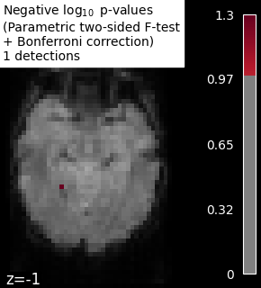
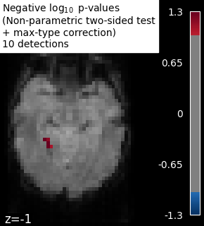

Note
Click here to download the full example code or to run this example in your browser via Binder
Massively univariate analysis of face vs house recognition#
A permuted Ordinary Least Squares algorithm is run at each voxel in order to determine whether or not it behaves differently under a “face viewing” condition and a “house viewing” condition. We consider the mean image per session and per condition. Otherwise, the observations cannot be exchanged at random because a time dependence exists between observations within a same session (see [1] for more detailed explanations).
The example shows the small differences that exist between Bonferroni-corrected p-values and family-wise corrected p-values obtained from a permutation test combined with a max-type procedure [2]. Bonferroni correction is a bit conservative, as revealed by the presence of a few false negative.
Note
If you are using Nilearn with a version older than 0.9.0,
then you should either upgrade your version or import maskers
from the input_data module instead of the maskers module.
That is, you should manually replace in the following example all occurrences of:
from nilearn.maskers import NiftiMasker
with:
from nilearn.input_data import NiftiMasker
References#
- [1] Winkler, A. M. et al. (2014).
Permutation inference for the general linear model. Neuroimage.
- [2] Anderson, M. J. & Robinson, J. (2001).
Permutation tests for linear models. Australian & New Zealand Journal of Statistics, 43(1), 75-88. (http://avesbiodiv.mncn.csic.es/estadistica/permut2.pdf)
# Author: Virgile Fritsch, <virgile.fritsch@inria.fr>, Feb. 2014
Load Haxby dataset
from nilearn import datasets, image
haxby_dataset = datasets.fetch_haxby(subjects=[2])
# print basic information on the dataset
print('Mask nifti image (3D) is located at: %s' % haxby_dataset.mask)
print('Functional nifti image (4D) is located at: %s' % haxby_dataset.func[0])
Mask nifti image (3D) is located at: /home/circleci/nilearn_data/haxby2001/mask.nii.gz
Functional nifti image (4D) is located at: /home/circleci/nilearn_data/haxby2001/subj2/bold.nii.gz
Restrict to faces and houses
import numpy as np
import pandas as pd
labels = pd.read_csv(haxby_dataset.session_target[0], sep=" ")
conditions = labels['labels']
categories = conditions.unique()
conditions_encoded = np.zeros_like(conditions)
for c, category in enumerate(categories):
conditions_encoded[conditions == category] = c
sessions = labels['chunks']
condition_mask = conditions.isin(['face', 'house'])
conditions_encoded = conditions_encoded[condition_mask]
Mask data
mask_filename = haxby_dataset.mask
from nilearn.image import index_img
from nilearn.maskers import NiftiMasker
nifti_masker = NiftiMasker(
smoothing_fwhm=8,
mask_img=mask_filename,
memory='nilearn_cache', memory_level=1) # cache options
func_filename = haxby_dataset.func[0]
func_reduced = index_img(func_filename,
condition_mask)
fmri_masked = nifti_masker.fit_transform(func_reduced)
# We consider the mean image per session and per condition.
# Otherwise, the observations cannot be exchanged at random because
# a time dependence exists between observations within a same session.
n_sessions = np.unique(sessions).size
grouped_fmri_masked = np.empty((2 * n_sessions, # two conditions per session
fmri_masked.shape[1]))
grouped_conditions_encoded = np.empty((2 * n_sessions, 1))
for s in range(n_sessions):
session_mask = sessions[condition_mask] == s
session_house_mask = np.logical_and(session_mask,
conditions[condition_mask] == 'house')
session_face_mask = np.logical_and(session_mask,
conditions[condition_mask] == 'face')
grouped_fmri_masked[2 * s] = fmri_masked[session_house_mask].mean(0)
grouped_fmri_masked[2 * s + 1] = fmri_masked[session_face_mask].mean(0)
grouped_conditions_encoded[2 * s] = conditions_encoded[
session_house_mask][0]
grouped_conditions_encoded[2 * s + 1] = conditions_encoded[
session_face_mask][0]
Perform massively univariate analysis with permuted OLS
We use a two-sided t-test to compute p-values, but we keep trace of the effect sign to add it back at the end and thus observe the signed effect
from nilearn.mass_univariate import permuted_ols
neg_log_pvals, t_scores_original_data, _ = permuted_ols(
grouped_conditions_encoded, grouped_fmri_masked,
# + intercept as a covariate by default
n_perm=10000, two_sided_test=True,
verbose=1, # display progress bar
n_jobs=1) # can be changed to use more CPUs
signed_neg_log_pvals = neg_log_pvals * np.sign(t_scores_original_data)
signed_neg_log_pvals_unmasked = nifti_masker.inverse_transform(
signed_neg_log_pvals)
[Parallel(n_jobs=1)]: Using backend SequentialBackend with 1 concurrent workers.
Job #1, processed 0/10000 permutations (0.00%, 22.220611572265625 seconds remaining)
Job #1, processed 10/10000 permutations (0.10%, 13.335707187652588 seconds remaining)
Job #1, processed 20/10000 permutations (0.20%, 11.976797580718992 seconds remaining)
Job #1, processed 30/10000 permutations (0.30%, 11.460390329360964 seconds remaining)
Job #1, processed 40/10000 permutations (0.40%, 11.203772306442259 seconds remaining)
Job #1, processed 50/10000 permutations (0.50%, 11.049819946289062 seconds remaining)
Job #1, processed 60/10000 permutations (0.60%, 11.05912717183431 seconds remaining)
Job #1, processed 70/10000 permutations (0.70%, 10.97547698020935 seconds remaining)
Job #1, processed 80/10000 permutations (0.80%, 10.9352445602417 seconds remaining)
Job #1, processed 90/10000 permutations (0.90%, 10.87238221698337 seconds remaining)
Job #1, processed 100/10000 permutations (1.00%, 10.816417694091797 seconds remaining)
Job #1, processed 110/10000 permutations (1.10%, 10.768502062017268 seconds remaining)
Job #1, processed 120/10000 permutations (1.20%, 10.7420330842336 seconds remaining)
Job #1, processed 130/10000 permutations (1.30%, 10.70580796095041 seconds remaining)
Job #1, processed 140/10000 permutations (1.40%, 10.666300671441215 seconds remaining)
Job #1, processed 150/10000 permutations (1.50%, 10.655390103658041 seconds remaining)
Job #1, processed 160/10000 permutations (1.60%, 10.64798104763031 seconds remaining)
Job #1, processed 170/10000 permutations (1.70%, 10.623579656376558 seconds remaining)
Job #1, processed 180/10000 permutations (1.80%, 10.598983340793186 seconds remaining)
Job #1, processed 190/10000 permutations (1.90%, 10.596779672723066 seconds remaining)
Job #1, processed 200/10000 permutations (2.00%, 10.570861101150513 seconds remaining)
Job #1, processed 210/10000 permutations (2.10%, 10.549390361422585 seconds remaining)
Job #1, processed 220/10000 permutations (2.20%, 10.530724135312164 seconds remaining)
Job #1, processed 230/10000 permutations (2.30%, 10.5069057215815 seconds remaining)
Job #1, processed 240/10000 permutations (2.40%, 10.501662413279215 seconds remaining)
Job #1, processed 250/10000 permutations (2.50%, 10.48322868347168 seconds remaining)
Job #1, processed 260/10000 permutations (2.60%, 10.462926351107084 seconds remaining)
Job #1, processed 270/10000 permutations (2.70%, 10.447087808891578 seconds remaining)
Job #1, processed 280/10000 permutations (2.80%, 10.434081520353045 seconds remaining)
Job #1, processed 290/10000 permutations (2.90%, 10.41996696077544 seconds remaining)
Job #1, processed 300/10000 permutations (3.00%, 10.40442705154419 seconds remaining)
Job #1, processed 310/10000 permutations (3.10%, 10.38478019160609 seconds remaining)
Job #1, processed 320/10000 permutations (3.20%, 10.369242668151854 seconds remaining)
Job #1, processed 330/10000 permutations (3.30%, 10.352889133222176 seconds remaining)
Job #1, processed 340/10000 permutations (3.40%, 10.341972743763643 seconds remaining)
Job #1, processed 350/10000 permutations (3.50%, 10.329734359468732 seconds remaining)
Job #1, processed 360/10000 permutations (3.60%, 10.314858092202082 seconds remaining)
Job #1, processed 370/10000 permutations (3.70%, 10.306787194432438 seconds remaining)
Job #1, processed 380/10000 permutations (3.80%, 10.299085642162122 seconds remaining)
Job #1, processed 390/10000 permutations (3.90%, 10.283234266134407 seconds remaining)
Job #1, processed 400/10000 permutations (4.00%, 10.269012451171875 seconds remaining)
Job #1, processed 410/10000 permutations (4.10%, 10.25512570869632 seconds remaining)
Job #1, processed 420/10000 permutations (4.20%, 10.238912094207036 seconds remaining)
Job #1, processed 430/10000 permutations (4.30%, 10.231493545133015 seconds remaining)
Job #1, processed 440/10000 permutations (4.40%, 10.226618593389336 seconds remaining)
Job #1, processed 450/10000 permutations (4.50%, 10.216585503684149 seconds remaining)
Job #1, processed 460/10000 permutations (4.60%, 10.204089434250543 seconds remaining)
Job #1, processed 470/10000 permutations (4.70%, 10.196865624569831 seconds remaining)
Job #1, processed 480/10000 permutations (4.80%, 10.182241002718609 seconds remaining)
Job #1, processed 490/10000 permutations (4.90%, 10.171440197496995 seconds remaining)
Job #1, processed 500/10000 permutations (5.00%, 10.156258821487427 seconds remaining)
Job #1, processed 510/10000 permutations (5.10%, 10.147087686202106 seconds remaining)
Job #1, processed 520/10000 permutations (5.20%, 10.139689207077026 seconds remaining)
Job #1, processed 530/10000 permutations (5.30%, 10.133663406911886 seconds remaining)
Job #1, processed 540/10000 permutations (5.40%, 10.122384398071853 seconds remaining)
Job #1, processed 550/10000 permutations (5.50%, 10.110640135678379 seconds remaining)
Job #1, processed 560/10000 permutations (5.60%, 10.095784391675677 seconds remaining)
Job #1, processed 570/10000 permutations (5.70%, 10.0847869044856 seconds remaining)
Job #1, processed 580/10000 permutations (5.80%, 10.073049273984186 seconds remaining)
Job #1, processed 590/10000 permutations (5.90%, 10.063330327050158 seconds remaining)
Job #1, processed 600/10000 permutations (6.00%, 10.052093982696533 seconds remaining)
Job #1, processed 610/10000 permutations (6.10%, 10.041515139282728 seconds remaining)
Job #1, processed 620/10000 permutations (6.20%, 10.032162350993003 seconds remaining)
Job #1, processed 630/10000 permutations (6.30%, 10.022767721660554 seconds remaining)
Job #1, processed 640/10000 permutations (6.40%, 10.009996265172957 seconds remaining)
Job #1, processed 650/10000 permutations (6.50%, 9.998194987957294 seconds remaining)
Job #1, processed 660/10000 permutations (6.60%, 9.986763607371937 seconds remaining)
Job #1, processed 670/10000 permutations (6.70%, 9.97642819917024 seconds remaining)
Job #1, processed 680/10000 permutations (6.80%, 9.965215584811043 seconds remaining)
Job #1, processed 690/10000 permutations (6.90%, 9.95376499839451 seconds remaining)
Job #1, processed 700/10000 permutations (7.00%, 9.939838477543423 seconds remaining)
Job #1, processed 710/10000 permutations (7.10%, 9.928792617690396 seconds remaining)
Job #1, processed 720/10000 permutations (7.20%, 9.921137703789604 seconds remaining)
Job #1, processed 730/10000 permutations (7.30%, 9.907359270200338 seconds remaining)
Job #1, processed 740/10000 permutations (7.40%, 9.896591656916849 seconds remaining)
Job #1, processed 750/10000 permutations (7.50%, 9.888302246729534 seconds remaining)
Job #1, processed 760/10000 permutations (7.60%, 9.875060357545552 seconds remaining)
Job #1, processed 770/10000 permutations (7.70%, 9.86375356959058 seconds remaining)
Job #1, processed 780/10000 permutations (7.80%, 9.850310863592686 seconds remaining)
Job #1, processed 790/10000 permutations (7.90%, 9.838861715944505 seconds remaining)
Job #1, processed 800/10000 permutations (8.00%, 9.827364802360535 seconds remaining)
Job #1, processed 810/10000 permutations (8.10%, 9.818134905379496 seconds remaining)
Job #1, processed 820/10000 permutations (8.20%, 9.80740379124153 seconds remaining)
Job #1, processed 830/10000 permutations (8.30%, 9.799971813178923 seconds remaining)
Job #1, processed 840/10000 permutations (8.40%, 9.787013825916107 seconds remaining)
Job #1, processed 850/10000 permutations (8.50%, 9.7759646247415 seconds remaining)
Job #1, processed 860/10000 permutations (8.60%, 9.764744786329048 seconds remaining)
Job #1, processed 870/10000 permutations (8.70%, 9.752102259931894 seconds remaining)
Job #1, processed 880/10000 permutations (8.80%, 9.741228233684193 seconds remaining)
Job #1, processed 890/10000 permutations (8.90%, 9.7286115978541 seconds remaining)
Job #1, processed 900/10000 permutations (9.00%, 9.720210234324137 seconds remaining)
Job #1, processed 910/10000 permutations (9.10%, 9.713287589314222 seconds remaining)
Job #1, processed 920/10000 permutations (9.20%, 9.700719408366991 seconds remaining)
Job #1, processed 930/10000 permutations (9.30%, 9.689670003870482 seconds remaining)
Job #1, processed 940/10000 permutations (9.40%, 9.678613094573326 seconds remaining)
Job #1, processed 950/10000 permutations (9.50%, 9.667771552738392 seconds remaining)
Job #1, processed 960/10000 permutations (9.60%, 9.657039185365042 seconds remaining)
Job #1, processed 970/10000 permutations (9.70%, 9.646372318267822 seconds remaining)
Job #1, processed 980/10000 permutations (9.80%, 9.63598378823728 seconds remaining)
Job #1, processed 990/10000 permutations (9.90%, 9.624581861977624 seconds remaining)
Job #1, processed 1000/10000 permutations (10.00%, 9.614127159118652 seconds remaining)
Job #1, processed 1010/10000 permutations (10.10%, 9.602657303951757 seconds remaining)
Job #1, processed 1020/10000 permutations (10.20%, 9.59176296346328 seconds remaining)
Job #1, processed 1030/10000 permutations (10.30%, 9.5791934786491 seconds remaining)
Job #1, processed 1040/10000 permutations (10.40%, 9.568790435791016 seconds remaining)
Job #1, processed 1050/10000 permutations (10.50%, 9.560352790923346 seconds remaining)
Job #1, processed 1060/10000 permutations (10.60%, 9.551174154821432 seconds remaining)
Job #1, processed 1070/10000 permutations (10.70%, 9.540266794579052 seconds remaining)
Job #1, processed 1080/10000 permutations (10.80%, 9.529366042878893 seconds remaining)
Job #1, processed 1090/10000 permutations (10.90%, 9.518573054479896 seconds remaining)
Job #1, processed 1100/10000 permutations (11.00%, 9.50789033282887 seconds remaining)
Job #1, processed 1110/10000 permutations (11.10%, 9.497238157031774 seconds remaining)
Job #1, processed 1120/10000 permutations (11.20%, 9.484921881130763 seconds remaining)
Job #1, processed 1130/10000 permutations (11.30%, 9.474271959963097 seconds remaining)
Job #1, processed 1140/10000 permutations (11.40%, 9.464551611950522 seconds remaining)
Job #1, processed 1150/10000 permutations (11.50%, 9.453555573587833 seconds remaining)
Job #1, processed 1160/10000 permutations (11.60%, 9.44308165024067 seconds remaining)
Job #1, processed 1170/10000 permutations (11.70%, 9.430977093867766 seconds remaining)
Job #1, processed 1180/10000 permutations (11.80%, 9.420027894488836 seconds remaining)
Job #1, processed 1190/10000 permutations (11.90%, 9.410508247984557 seconds remaining)
Job #1, processed 1200/10000 permutations (12.00%, 9.398181438446045 seconds remaining)
Job #1, processed 1210/10000 permutations (12.10%, 9.387397551339522 seconds remaining)
Job #1, processed 1220/10000 permutations (12.20%, 9.379481045926203 seconds remaining)
Job #1, processed 1230/10000 permutations (12.30%, 9.367329806816286 seconds remaining)
Job #1, processed 1240/10000 permutations (12.40%, 9.356595131658738 seconds remaining)
Job #1, processed 1250/10000 permutations (12.50%, 9.344232559204102 seconds remaining)
Job #1, processed 1260/10000 permutations (12.60%, 9.332851421265376 seconds remaining)
Job #1, processed 1270/10000 permutations (12.70%, 9.322272878932202 seconds remaining)
Job #1, processed 1280/10000 permutations (12.80%, 9.312051504850388 seconds remaining)
Job #1, processed 1290/10000 permutations (12.90%, 9.301649757133898 seconds remaining)
Job #1, processed 1300/10000 permutations (13.00%, 9.292666361882137 seconds remaining)
Job #1, processed 1310/10000 permutations (13.10%, 9.280467923360927 seconds remaining)
Job #1, processed 1320/10000 permutations (13.20%, 9.271221420981668 seconds remaining)
Job #1, processed 1330/10000 permutations (13.30%, 9.260798429187975 seconds remaining)
Job #1, processed 1340/10000 permutations (13.40%, 9.248836332292699 seconds remaining)
Job #1, processed 1350/10000 permutations (13.50%, 9.23790286205433 seconds remaining)
Job #1, processed 1360/10000 permutations (13.60%, 9.226919174194336 seconds remaining)
Job #1, processed 1370/10000 permutations (13.70%, 9.216478290349027 seconds remaining)
Job #1, processed 1380/10000 permutations (13.80%, 9.20713396003281 seconds remaining)
Job #1, processed 1390/10000 permutations (13.90%, 9.195151888209281 seconds remaining)
Job #1, processed 1400/10000 permutations (14.00%, 9.184560775756836 seconds remaining)
Job #1, processed 1410/10000 permutations (14.10%, 9.177903007953725 seconds remaining)
Job #1, processed 1420/10000 permutations (14.20%, 9.166782627642995 seconds remaining)
Job #1, processed 1430/10000 permutations (14.30%, 9.15616802068857 seconds remaining)
Job #1, processed 1440/10000 permutations (14.40%, 9.145640161302353 seconds remaining)
Job #1, processed 1450/10000 permutations (14.50%, 9.133588659352268 seconds remaining)
Job #1, processed 1460/10000 permutations (14.60%, 9.124065134623281 seconds remaining)
Job #1, processed 1470/10000 permutations (14.70%, 9.114707147183061 seconds remaining)
Job #1, processed 1480/10000 permutations (14.80%, 9.104423664711618 seconds remaining)
Job #1, processed 1490/10000 permutations (14.90%, 9.093642273205237 seconds remaining)
Job #1, processed 1500/10000 permutations (15.00%, 9.082613786061605 seconds remaining)
Job #1, processed 1510/10000 permutations (15.10%, 9.070960597486685 seconds remaining)
Job #1, processed 1520/10000 permutations (15.20%, 9.060151075062 seconds remaining)
Job #1, processed 1530/10000 permutations (15.30%, 9.048105442446042 seconds remaining)
Job #1, processed 1540/10000 permutations (15.40%, 9.037920889916357 seconds remaining)
Job #1, processed 1550/10000 permutations (15.50%, 9.027419397907872 seconds remaining)
Job #1, processed 1560/10000 permutations (15.60%, 9.017735530168583 seconds remaining)
Job #1, processed 1570/10000 permutations (15.70%, 9.006705199077631 seconds remaining)
Job #1, processed 1580/10000 permutations (15.80%, 8.995625426497641 seconds remaining)
Job #1, processed 1590/10000 permutations (15.90%, 8.983527576398549 seconds remaining)
Job #1, processed 1600/10000 permutations (16.00%, 8.972847640514374 seconds remaining)
Job #1, processed 1610/10000 permutations (16.10%, 8.961573787357496 seconds remaining)
Job #1, processed 1620/10000 permutations (16.20%, 8.949994151974902 seconds remaining)
Job #1, processed 1630/10000 permutations (16.30%, 8.939798855342747 seconds remaining)
Job #1, processed 1640/10000 permutations (16.40%, 8.928309434797706 seconds remaining)
Job #1, processed 1650/10000 permutations (16.50%, 8.919250856746327 seconds remaining)
Job #1, processed 1660/10000 permutations (16.60%, 8.908886001770755 seconds remaining)
Job #1, processed 1670/10000 permutations (16.70%, 8.897219138231106 seconds remaining)
Job #1, processed 1680/10000 permutations (16.80%, 8.886339732578822 seconds remaining)
Job #1, processed 1690/10000 permutations (16.90%, 8.876088008372742 seconds remaining)
Job #1, processed 1700/10000 permutations (17.00%, 8.864384468863992 seconds remaining)
Job #1, processed 1710/10000 permutations (17.10%, 8.853958670855963 seconds remaining)
Job #1, processed 1720/10000 permutations (17.20%, 8.843043815257937 seconds remaining)
Job #1, processed 1730/10000 permutations (17.30%, 8.832666765058661 seconds remaining)
Job #1, processed 1740/10000 permutations (17.40%, 8.822262868113901 seconds remaining)
Job #1, processed 1750/10000 permutations (17.50%, 8.813704081944056 seconds remaining)
Job #1, processed 1760/10000 permutations (17.60%, 8.802420366894115 seconds remaining)
Job #1, processed 1770/10000 permutations (17.70%, 8.791737975373781 seconds remaining)
Job #1, processed 1780/10000 permutations (17.80%, 8.780238631066313 seconds remaining)
Job #1, processed 1790/10000 permutations (17.90%, 8.769446967034366 seconds remaining)
Job #1, processed 1800/10000 permutations (18.00%, 8.759020646413166 seconds remaining)
Job #1, processed 1810/10000 permutations (18.10%, 8.748847645290649 seconds remaining)
Job #1, processed 1820/10000 permutations (18.20%, 8.737933790290748 seconds remaining)
Job #1, processed 1830/10000 permutations (18.30%, 8.727375349711851 seconds remaining)
Job #1, processed 1840/10000 permutations (18.40%, 8.716968577841055 seconds remaining)
Job #1, processed 1850/10000 permutations (18.50%, 8.706723058545911 seconds remaining)
Job #1, processed 1860/10000 permutations (18.60%, 8.696811922134891 seconds remaining)
Job #1, processed 1870/10000 permutations (18.70%, 8.685185522956644 seconds remaining)
Job #1, processed 1880/10000 permutations (18.80%, 8.675144936176057 seconds remaining)
Job #1, processed 1890/10000 permutations (18.90%, 8.664929220916102 seconds remaining)
Job #1, processed 1900/10000 permutations (19.00%, 8.653281400078223 seconds remaining)
Job #1, processed 1910/10000 permutations (19.10%, 8.64267910837503 seconds remaining)
Job #1, processed 1920/10000 permutations (19.20%, 8.632338653008143 seconds remaining)
Job #1, processed 1930/10000 permutations (19.30%, 8.623086416659577 seconds remaining)
Job #1, processed 1940/10000 permutations (19.40%, 8.613658398697057 seconds remaining)
Job #1, processed 1950/10000 permutations (19.50%, 8.602460463841757 seconds remaining)
Job #1, processed 1960/10000 permutations (19.60%, 8.591807886045807 seconds remaining)
Job #1, processed 1970/10000 permutations (19.70%, 8.581039235071483 seconds remaining)
Job #1, processed 1980/10000 permutations (19.80%, 8.56950290997823 seconds remaining)
Job #1, processed 1990/10000 permutations (19.90%, 8.558542480420828 seconds remaining)
Job #1, processed 2000/10000 permutations (20.00%, 8.54775619506836 seconds remaining)
Job #1, processed 2010/10000 permutations (20.10%, 8.53629448283371 seconds remaining)
Job #1, processed 2020/10000 permutations (20.20%, 8.52652081404582 seconds remaining)
Job #1, processed 2030/10000 permutations (20.30%, 8.516727485092991 seconds remaining)
Job #1, processed 2040/10000 permutations (20.40%, 8.505241207048005 seconds remaining)
Job #1, processed 2050/10000 permutations (20.50%, 8.494681015247252 seconds remaining)
Job #1, processed 2060/10000 permutations (20.60%, 8.48316266930219 seconds remaining)
Job #1, processed 2070/10000 permutations (20.70%, 8.472863753636679 seconds remaining)
Job #1, processed 2080/10000 permutations (20.80%, 8.462020012048574 seconds remaining)
Job #1, processed 2090/10000 permutations (20.90%, 8.450583551488995 seconds remaining)
Job #1, processed 2100/10000 permutations (21.00%, 8.441196611949376 seconds remaining)
Job #1, processed 2110/10000 permutations (21.10%, 8.43048624630788 seconds remaining)
Job #1, processed 2120/10000 permutations (21.20%, 8.421015087163672 seconds remaining)
Job #1, processed 2130/10000 permutations (21.30%, 8.4142796881322 seconds remaining)
Job #1, processed 2140/10000 permutations (21.40%, 8.40450864863173 seconds remaining)
Job #1, processed 2150/10000 permutations (21.50%, 8.393947612407596 seconds remaining)
Job #1, processed 2160/10000 permutations (21.60%, 8.383225794191715 seconds remaining)
Job #1, processed 2170/10000 permutations (21.70%, 8.372838966308102 seconds remaining)
Job #1, processed 2180/10000 permutations (21.80%, 8.361302524531654 seconds remaining)
Job #1, processed 2190/10000 permutations (21.90%, 8.3504025642186 seconds remaining)
Job #1, processed 2200/10000 permutations (22.00%, 8.339445851065896 seconds remaining)
Job #1, processed 2210/10000 permutations (22.10%, 8.327787955961616 seconds remaining)
Job #1, processed 2220/10000 permutations (22.20%, 8.317956026609954 seconds remaining)
Job #1, processed 2230/10000 permutations (22.30%, 8.3075534634526 seconds remaining)
Job #1, processed 2240/10000 permutations (22.40%, 8.296315848827362 seconds remaining)
Job #1, processed 2250/10000 permutations (22.50%, 8.285443358951145 seconds remaining)
Job #1, processed 2260/10000 permutations (22.60%, 8.27400381797183 seconds remaining)
Job #1, processed 2270/10000 permutations (22.70%, 8.263230424620506 seconds remaining)
Job #1, processed 2280/10000 permutations (22.80%, 8.252345766937523 seconds remaining)
Job #1, processed 2290/10000 permutations (22.90%, 8.24091024586207 seconds remaining)
Job #1, processed 2300/10000 permutations (23.00%, 8.22995486466781 seconds remaining)
Job #1, processed 2310/10000 permutations (23.10%, 8.220028732762191 seconds remaining)
Job #1, processed 2320/10000 permutations (23.20%, 8.209924369022763 seconds remaining)
Job #1, processed 2330/10000 permutations (23.30%, 8.199239752323331 seconds remaining)
Job #1, processed 2340/10000 permutations (23.40%, 8.187825341509958 seconds remaining)
Job #1, processed 2350/10000 permutations (23.50%, 8.17793475820663 seconds remaining)
Job #1, processed 2360/10000 permutations (23.60%, 8.167265815249944 seconds remaining)
Job #1, processed 2370/10000 permutations (23.70%, 8.155752314796931 seconds remaining)
Job #1, processed 2380/10000 permutations (23.80%, 8.144888324897831 seconds remaining)
Job #1, processed 2390/10000 permutations (23.90%, 8.135480784970845 seconds remaining)
Job #1, processed 2400/10000 permutations (24.00%, 8.125091314315796 seconds remaining)
Job #1, processed 2410/10000 permutations (24.10%, 8.114419232760227 seconds remaining)
Job #1, processed 2420/10000 permutations (24.20%, 8.103646130601236 seconds remaining)
Job #1, processed 2430/10000 permutations (24.30%, 8.092264883802752 seconds remaining)
Job #1, processed 2440/10000 permutations (24.40%, 8.08166823230806 seconds remaining)
Job #1, processed 2450/10000 permutations (24.50%, 8.070837668010167 seconds remaining)
Job #1, processed 2460/10000 permutations (24.60%, 8.059774042145023 seconds remaining)
Job #1, processed 2470/10000 permutations (24.70%, 8.048970277492817 seconds remaining)
Job #1, processed 2480/10000 permutations (24.80%, 8.037499012485627 seconds remaining)
Job #1, processed 2490/10000 permutations (24.90%, 8.026745119248048 seconds remaining)
Job #1, processed 2500/10000 permutations (25.00%, 8.01652479171753 seconds remaining)
Job #1, processed 2510/10000 permutations (25.10%, 8.005131995060529 seconds remaining)
Job #1, processed 2520/10000 permutations (25.20%, 7.994578191212246 seconds remaining)
Job #1, processed 2530/10000 permutations (25.30%, 7.983648471681496 seconds remaining)
Job #1, processed 2540/10000 permutations (25.40%, 7.972271748415129 seconds remaining)
Job #1, processed 2550/10000 permutations (25.50%, 7.961526384540632 seconds remaining)
Job #1, processed 2560/10000 permutations (25.60%, 7.950716502964497 seconds remaining)
Job #1, processed 2570/10000 permutations (25.70%, 7.940213261875197 seconds remaining)
Job #1, processed 2580/10000 permutations (25.80%, 7.929570972457413 seconds remaining)
Job #1, processed 2590/10000 permutations (25.90%, 7.918965055215312 seconds remaining)
Job #1, processed 2600/10000 permutations (26.00%, 7.907993903526894 seconds remaining)
Job #1, processed 2610/10000 permutations (26.10%, 7.897262642666754 seconds remaining)
Job #1, processed 2620/10000 permutations (26.20%, 7.886001299355777 seconds remaining)
Job #1, processed 2630/10000 permutations (26.30%, 7.875244294735869 seconds remaining)
Job #1, processed 2640/10000 permutations (26.40%, 7.864729967984285 seconds remaining)
Job #1, processed 2650/10000 permutations (26.50%, 7.854356059488261 seconds remaining)
Job #1, processed 2660/10000 permutations (26.60%, 7.843483568134165 seconds remaining)
Job #1, processed 2670/10000 permutations (26.70%, 7.8328878825969905 seconds remaining)
Job #1, processed 2680/10000 permutations (26.80%, 7.821892741900772 seconds remaining)
Job #1, processed 2690/10000 permutations (26.90%, 7.811751427703631 seconds remaining)
Job #1, processed 2700/10000 permutations (27.00%, 7.8011140470151545 seconds remaining)
Job #1, processed 2710/10000 permutations (27.10%, 7.78989766884554 seconds remaining)
Job #1, processed 2720/10000 permutations (27.20%, 7.779252010233262 seconds remaining)
Job #1, processed 2730/10000 permutations (27.30%, 7.768997052650311 seconds remaining)
Job #1, processed 2740/10000 permutations (27.40%, 7.758548252773981 seconds remaining)
Job #1, processed 2750/10000 permutations (27.50%, 7.748028560118241 seconds remaining)
Job #1, processed 2760/10000 permutations (27.60%, 7.736984349679256 seconds remaining)
Job #1, processed 2770/10000 permutations (27.70%, 7.726467677402152 seconds remaining)
Job #1, processed 2780/10000 permutations (27.80%, 7.716394522207246 seconds remaining)
Job #1, processed 2790/10000 permutations (27.90%, 7.7052499897591105 seconds remaining)
Job #1, processed 2800/10000 permutations (28.00%, 7.6951791899544855 seconds remaining)
Job #1, processed 2810/10000 permutations (28.10%, 7.684719190902982 seconds remaining)
Job #1, processed 2820/10000 permutations (28.20%, 7.673905470692519 seconds remaining)
Job #1, processed 2830/10000 permutations (28.30%, 7.66343185926916 seconds remaining)
Job #1, processed 2840/10000 permutations (28.40%, 7.652248066915592 seconds remaining)
Job #1, processed 2850/10000 permutations (28.50%, 7.641578147285863 seconds remaining)
Job #1, processed 2860/10000 permutations (28.60%, 7.631508625470675 seconds remaining)
Job #1, processed 2870/10000 permutations (28.70%, 7.621248864130691 seconds remaining)
Job #1, processed 2880/10000 permutations (28.80%, 7.610617127683428 seconds remaining)
Job #1, processed 2890/10000 permutations (28.90%, 7.5999373234679535 seconds remaining)
Job #1, processed 2900/10000 permutations (29.00%, 7.588712823802027 seconds remaining)
Job #1, processed 2910/10000 permutations (29.10%, 7.577944277078426 seconds remaining)
Job #1, processed 2920/10000 permutations (29.20%, 7.567361492000214 seconds remaining)
Job #1, processed 2930/10000 permutations (29.30%, 7.556024627067123 seconds remaining)
Job #1, processed 2940/10000 permutations (29.40%, 7.5457308519454225 seconds remaining)
Job #1, processed 2950/10000 permutations (29.50%, 7.534968355954703 seconds remaining)
Job #1, processed 2960/10000 permutations (29.60%, 7.523773915058858 seconds remaining)
Job #1, processed 2970/10000 permutations (29.70%, 7.513937600935348 seconds remaining)
Job #1, processed 2980/10000 permutations (29.80%, 7.502763191325553 seconds remaining)
Job #1, processed 2990/10000 permutations (29.90%, 7.492233431060178 seconds remaining)
Job #1, processed 3000/10000 permutations (30.00%, 7.481594800949098 seconds remaining)
Job #1, processed 3010/10000 permutations (30.10%, 7.470476224968996 seconds remaining)
Job #1, processed 3020/10000 permutations (30.20%, 7.460094069802998 seconds remaining)
Job #1, processed 3030/10000 permutations (30.30%, 7.449277953346177 seconds remaining)
Job #1, processed 3040/10000 permutations (30.40%, 7.438976149809987 seconds remaining)
Job #1, processed 3050/10000 permutations (30.50%, 7.428240432113898 seconds remaining)
Job #1, processed 3060/10000 permutations (30.60%, 7.418107531429116 seconds remaining)
Job #1, processed 3070/10000 permutations (30.70%, 7.407264391063479 seconds remaining)
Job #1, processed 3080/10000 permutations (30.80%, 7.39702371498207 seconds remaining)
Job #1, processed 3090/10000 permutations (30.90%, 7.3867186010848345 seconds remaining)
Job #1, processed 3100/10000 permutations (31.00%, 7.3758447324076 seconds remaining)
Job #1, processed 3110/10000 permutations (31.10%, 7.365952390566517 seconds remaining)
Job #1, processed 3120/10000 permutations (31.20%, 7.35514992934007 seconds remaining)
Job #1, processed 3130/10000 permutations (31.30%, 7.343954982087255 seconds remaining)
Job #1, processed 3140/10000 permutations (31.40%, 7.333268397932598 seconds remaining)
Job #1, processed 3150/10000 permutations (31.50%, 7.322046726469009 seconds remaining)
Job #1, processed 3160/10000 permutations (31.60%, 7.311859013159064 seconds remaining)
Job #1, processed 3170/10000 permutations (31.70%, 7.301213599905982 seconds remaining)
Job #1, processed 3180/10000 permutations (31.80%, 7.290198089191749 seconds remaining)
Job #1, processed 3190/10000 permutations (31.90%, 7.27973322883295 seconds remaining)
Job #1, processed 3200/10000 permutations (32.00%, 7.269026160240173 seconds remaining)
Job #1, processed 3210/10000 permutations (32.10%, 7.257842669234469 seconds remaining)
Job #1, processed 3220/10000 permutations (32.20%, 7.247086388724189 seconds remaining)
Job #1, processed 3230/10000 permutations (32.30%, 7.236359706235007 seconds remaining)
Job #1, processed 3240/10000 permutations (32.40%, 7.225206066060949 seconds remaining)
Job #1, processed 3250/10000 permutations (32.50%, 7.2149658019726095 seconds remaining)
Job #1, processed 3260/10000 permutations (32.60%, 7.2039056731148 seconds remaining)
Job #1, processed 3270/10000 permutations (32.70%, 7.193565811950496 seconds remaining)
Job #1, processed 3280/10000 permutations (32.80%, 7.18313584676603 seconds remaining)
Job #1, processed 3290/10000 permutations (32.90%, 7.1730886563704 seconds remaining)
Job #1, processed 3300/10000 permutations (33.00%, 7.162342006509954 seconds remaining)
Job #1, processed 3310/10000 permutations (33.10%, 7.151529366876424 seconds remaining)
Job #1, processed 3320/10000 permutations (33.20%, 7.140470780521989 seconds remaining)
Job #1, processed 3330/10000 permutations (33.30%, 7.12977271896225 seconds remaining)
Job #1, processed 3340/10000 permutations (33.40%, 7.11949927649812 seconds remaining)
Job #1, processed 3350/10000 permutations (33.50%, 7.108567561676253 seconds remaining)
Job #1, processed 3360/10000 permutations (33.60%, 7.097802446002052 seconds remaining)
Job #1, processed 3370/10000 permutations (33.70%, 7.086940442065456 seconds remaining)
Job #1, processed 3380/10000 permutations (33.80%, 7.075991255291821 seconds remaining)
Job #1, processed 3390/10000 permutations (33.90%, 7.065264739118143 seconds remaining)
Job #1, processed 3400/10000 permutations (34.00%, 7.054091481601491 seconds remaining)
Job #1, processed 3410/10000 permutations (34.10%, 7.043345964549224 seconds remaining)
Job #1, processed 3420/10000 permutations (34.20%, 7.032750039072761 seconds remaining)
Job #1, processed 3430/10000 permutations (34.30%, 7.02229349884278 seconds remaining)
Job #1, processed 3440/10000 permutations (34.40%, 7.012129528577937 seconds remaining)
Job #1, processed 3450/10000 permutations (34.50%, 7.001487452050914 seconds remaining)
Job #1, processed 3460/10000 permutations (34.60%, 6.990362310685175 seconds remaining)
Job #1, processed 3470/10000 permutations (34.70%, 6.9796995477648895 seconds remaining)
Job #1, processed 3480/10000 permutations (34.80%, 6.969204513505958 seconds remaining)
Job #1, processed 3490/10000 permutations (34.90%, 6.958082488068195 seconds remaining)
Job #1, processed 3500/10000 permutations (35.00%, 6.947799342019217 seconds remaining)
Job #1, processed 3510/10000 permutations (35.10%, 6.938048260843653 seconds remaining)
Job #1, processed 3520/10000 permutations (35.20%, 6.92717502333901 seconds remaining)
Job #1, processed 3530/10000 permutations (35.30%, 6.917095644278163 seconds remaining)
Job #1, processed 3540/10000 permutations (35.40%, 6.906088127254766 seconds remaining)
Job #1, processed 3550/10000 permutations (35.50%, 6.89524494762152 seconds remaining)
Job #1, processed 3560/10000 permutations (35.60%, 6.884532917751355 seconds remaining)
Job #1, processed 3570/10000 permutations (35.70%, 6.873463369551159 seconds remaining)
Job #1, processed 3580/10000 permutations (35.80%, 6.862734885189121 seconds remaining)
Job #1, processed 3590/10000 permutations (35.90%, 6.8524375459941975 seconds remaining)
Job #1, processed 3600/10000 permutations (36.00%, 6.841342926025391 seconds remaining)
Job #1, processed 3610/10000 permutations (36.10%, 6.830694506373102 seconds remaining)
Job #1, processed 3620/10000 permutations (36.20%, 6.820328942978579 seconds remaining)
Job #1, processed 3630/10000 permutations (36.30%, 6.809295771864164 seconds remaining)
Job #1, processed 3640/10000 permutations (36.40%, 6.798635896745619 seconds remaining)
Job #1, processed 3650/10000 permutations (36.50%, 6.787879535596665 seconds remaining)
Job #1, processed 3660/10000 permutations (36.60%, 6.776765265751406 seconds remaining)
Job #1, processed 3670/10000 permutations (36.70%, 6.766615264097416 seconds remaining)
Job #1, processed 3680/10000 permutations (36.80%, 6.755585214366085 seconds remaining)
Job #1, processed 3690/10000 permutations (36.90%, 6.744854482531871 seconds remaining)
Job #1, processed 3700/10000 permutations (37.00%, 6.734082292866062 seconds remaining)
Job #1, processed 3710/10000 permutations (37.10%, 6.722894063857045 seconds remaining)
Job #1, processed 3720/10000 permutations (37.20%, 6.7130777682027505 seconds remaining)
Job #1, processed 3730/10000 permutations (37.30%, 6.702759874410349 seconds remaining)
Job #1, processed 3740/10000 permutations (37.40%, 6.6923458282960295 seconds remaining)
Job #1, processed 3750/10000 permutations (37.50%, 6.682029565175375 seconds remaining)
Job #1, processed 3760/10000 permutations (37.60%, 6.671199301455883 seconds remaining)
Job #1, processed 3770/10000 permutations (37.70%, 6.660096001561819 seconds remaining)
Job #1, processed 3780/10000 permutations (37.80%, 6.649280241557531 seconds remaining)
Job #1, processed 3790/10000 permutations (37.90%, 6.6382831099165465 seconds remaining)
Job #1, processed 3800/10000 permutations (38.00%, 6.627516144200375 seconds remaining)
Job #1, processed 3810/10000 permutations (38.10%, 6.617450940014495 seconds remaining)
Job #1, processed 3820/10000 permutations (38.20%, 6.606791855777121 seconds remaining)
Job #1, processed 3830/10000 permutations (38.30%, 6.596044934449558 seconds remaining)
Job #1, processed 3840/10000 permutations (38.40%, 6.5852786004543304 seconds remaining)
Job #1, processed 3850/10000 permutations (38.50%, 6.574261925437233 seconds remaining)
Job #1, processed 3860/10000 permutations (38.60%, 6.563744053321798 seconds remaining)
Job #1, processed 3870/10000 permutations (38.70%, 6.553050636937143 seconds remaining)
Job #1, processed 3880/10000 permutations (38.80%, 6.5419966043885225 seconds remaining)
Job #1, processed 3890/10000 permutations (38.90%, 6.531233231635205 seconds remaining)
Job #1, processed 3900/10000 permutations (39.00%, 6.520475326440273 seconds remaining)
Job #1, processed 3910/10000 permutations (39.10%, 6.510405731323124 seconds remaining)
Job #1, processed 3920/10000 permutations (39.20%, 6.499663469742754 seconds remaining)
Job #1, processed 3930/10000 permutations (39.30%, 6.488640672377958 seconds remaining)
Job #1, processed 3940/10000 permutations (39.40%, 6.477901918633941 seconds remaining)
Job #1, processed 3950/10000 permutations (39.50%, 6.467360768137099 seconds remaining)
Job #1, processed 3960/10000 permutations (39.60%, 6.456502367751766 seconds remaining)
Job #1, processed 3970/10000 permutations (39.70%, 6.445712729725488 seconds remaining)
Job #1, processed 3980/10000 permutations (39.80%, 6.435000377683784 seconds remaining)
Job #1, processed 3990/10000 permutations (39.90%, 6.424330952173487 seconds remaining)
Job #1, processed 4000/10000 permutations (40.00%, 6.4140543937683105 seconds remaining)
Job #1, processed 4010/10000 permutations (40.10%, 6.403363060178305 seconds remaining)
Job #1, processed 4020/10000 permutations (40.20%, 6.392354668669439 seconds remaining)
Job #1, processed 4030/10000 permutations (40.30%, 6.381734249905381 seconds remaining)
Job #1, processed 4040/10000 permutations (40.40%, 6.37096905000139 seconds remaining)
Job #1, processed 4050/10000 permutations (40.50%, 6.359986258141789 seconds remaining)
Job #1, processed 4060/10000 permutations (40.60%, 6.3492654156802315 seconds remaining)
Job #1, processed 4070/10000 permutations (40.70%, 6.338605627088055 seconds remaining)
Job #1, processed 4080/10000 permutations (40.80%, 6.327894743751078 seconds remaining)
Job #1, processed 4090/10000 permutations (40.90%, 6.317588497782104 seconds remaining)
Job #1, processed 4100/10000 permutations (41.00%, 6.3065785024224255 seconds remaining)
Job #1, processed 4110/10000 permutations (41.10%, 6.2958448310258035 seconds remaining)
Job #1, processed 4120/10000 permutations (41.20%, 6.285250696163732 seconds remaining)
Job #1, processed 4130/10000 permutations (41.30%, 6.274215592599089 seconds remaining)
Job #1, processed 4140/10000 permutations (41.40%, 6.263447913570681 seconds remaining)
Job #1, processed 4150/10000 permutations (41.50%, 6.253058979310185 seconds remaining)
Job #1, processed 4160/10000 permutations (41.60%, 6.24209825350688 seconds remaining)
Job #1, processed 4170/10000 permutations (41.70%, 6.231409088884897 seconds remaining)
Job #1, processed 4180/10000 permutations (41.80%, 6.220383653230075 seconds remaining)
Job #1, processed 4190/10000 permutations (41.90%, 6.210069786108194 seconds remaining)
Job #1, processed 4200/10000 permutations (42.00%, 6.199276435942877 seconds remaining)
Job #1, processed 4210/10000 permutations (42.10%, 6.1882376937005406 seconds remaining)
Job #1, processed 4220/10000 permutations (42.20%, 6.177816067826691 seconds remaining)
Job #1, processed 4230/10000 permutations (42.30%, 6.167091112046659 seconds remaining)
Job #1, processed 4240/10000 permutations (42.40%, 6.156118680846017 seconds remaining)
Job #1, processed 4250/10000 permutations (42.50%, 6.14526598593768 seconds remaining)
Job #1, processed 4260/10000 permutations (42.60%, 6.134561127899958 seconds remaining)
Job #1, processed 4270/10000 permutations (42.70%, 6.12419810674788 seconds remaining)
Job #1, processed 4280/10000 permutations (42.80%, 6.113930261023692 seconds remaining)
Job #1, processed 4290/10000 permutations (42.90%, 6.10300527974998 seconds remaining)
Job #1, processed 4300/10000 permutations (43.00%, 6.0922879673713854 seconds remaining)
Job #1, processed 4310/10000 permutations (43.10%, 6.082010606602007 seconds remaining)
Job #1, processed 4320/10000 permutations (43.20%, 6.071028342953434 seconds remaining)
Job #1, processed 4330/10000 permutations (43.30%, 6.06028573782835 seconds remaining)
Job #1, processed 4340/10000 permutations (43.40%, 6.049484806676065 seconds remaining)
Job #1, processed 4350/10000 permutations (43.50%, 6.038526858406506 seconds remaining)
Job #1, processed 4360/10000 permutations (43.60%, 6.027836335908383 seconds remaining)
Job #1, processed 4370/10000 permutations (43.70%, 6.017126792628377 seconds remaining)
Job #1, processed 4380/10000 permutations (43.80%, 6.0069576746796916 seconds remaining)
Job #1, processed 4390/10000 permutations (43.90%, 5.996372126772627 seconds remaining)
Job #1, processed 4400/10000 permutations (44.00%, 5.986039421775124 seconds remaining)
Job #1, processed 4410/10000 permutations (44.10%, 5.975143530471525 seconds remaining)
Job #1, processed 4420/10000 permutations (44.20%, 5.964584312827339 seconds remaining)
Job #1, processed 4430/10000 permutations (44.30%, 5.954300135575892 seconds remaining)
Job #1, processed 4440/10000 permutations (44.40%, 5.943422130636267 seconds remaining)
Job #1, processed 4450/10000 permutations (44.50%, 5.932820400495207 seconds remaining)
Job #1, processed 4460/10000 permutations (44.60%, 5.9222280294905865 seconds remaining)
Job #1, processed 4470/10000 permutations (44.70%, 5.911790313870047 seconds remaining)
Job #1, processed 4480/10000 permutations (44.80%, 5.901284171002252 seconds remaining)
Job #1, processed 4490/10000 permutations (44.90%, 5.8906410765276185 seconds remaining)
Job #1, processed 4500/10000 permutations (45.00%, 5.879951847924127 seconds remaining)
Job #1, processed 4510/10000 permutations (45.10%, 5.872725579796768 seconds remaining)
Job #1, processed 4520/10000 permutations (45.20%, 5.862196671224273 seconds remaining)
Job #1, processed 4530/10000 permutations (45.30%, 5.851884629289573 seconds remaining)
Job #1, processed 4540/10000 permutations (45.40%, 5.841853348694184 seconds remaining)
Job #1, processed 4550/10000 permutations (45.50%, 5.831226694714892 seconds remaining)
Job #1, processed 4560/10000 permutations (45.60%, 5.820772672954358 seconds remaining)
Job #1, processed 4570/10000 permutations (45.70%, 5.810500811695791 seconds remaining)
Job #1, processed 4580/10000 permutations (45.80%, 5.799624536755825 seconds remaining)
Job #1, processed 4590/10000 permutations (45.90%, 5.788884558708839 seconds remaining)
Job #1, processed 4600/10000 permutations (46.00%, 5.778198076331098 seconds remaining)
Job #1, processed 4610/10000 permutations (46.10%, 5.767547163684042 seconds remaining)
Job #1, processed 4620/10000 permutations (46.20%, 5.756991639281763 seconds remaining)
Job #1, processed 4630/10000 permutations (46.30%, 5.746368861867851 seconds remaining)
Job #1, processed 4640/10000 permutations (46.40%, 5.735872424882034 seconds remaining)
Job #1, processed 4650/10000 permutations (46.50%, 5.725517537004205 seconds remaining)
Job #1, processed 4660/10000 permutations (46.60%, 5.715447559888782 seconds remaining)
Job #1, processed 4670/10000 permutations (46.70%, 5.704505016257472 seconds remaining)
Job #1, processed 4680/10000 permutations (46.80%, 5.694066055819521 seconds remaining)
Job #1, processed 4690/10000 permutations (46.90%, 5.683953494659619 seconds remaining)
Job #1, processed 4700/10000 permutations (47.00%, 5.673035012914779 seconds remaining)
Job #1, processed 4710/10000 permutations (47.10%, 5.662307834422766 seconds remaining)
Job #1, processed 4720/10000 permutations (47.20%, 5.651822478084241 seconds remaining)
Job #1, processed 4730/10000 permutations (47.30%, 5.640898132929087 seconds remaining)
Job #1, processed 4740/10000 permutations (47.40%, 5.630701012752227 seconds remaining)
Job #1, processed 4750/10000 permutations (47.50%, 5.620042901290091 seconds remaining)
Job #1, processed 4760/10000 permutations (47.60%, 5.60914242768488 seconds remaining)
Job #1, processed 4770/10000 permutations (47.70%, 5.5987707848818795 seconds remaining)
Job #1, processed 4780/10000 permutations (47.80%, 5.587967918507724 seconds remaining)
Job #1, processed 4790/10000 permutations (47.90%, 5.577535111122689 seconds remaining)
Job #1, processed 4800/10000 permutations (48.00%, 5.56676306327184 seconds remaining)
Job #1, processed 4810/10000 permutations (48.10%, 5.55580529601559 seconds remaining)
Job #1, processed 4820/10000 permutations (48.20%, 5.545554167996798 seconds remaining)
Job #1, processed 4830/10000 permutations (48.30%, 5.534751495219166 seconds remaining)
Job #1, processed 4840/10000 permutations (48.40%, 5.524473974527407 seconds remaining)
Job #1, processed 4850/10000 permutations (48.50%, 5.513963158597651 seconds remaining)
Job #1, processed 4860/10000 permutations (48.60%, 5.503265950905442 seconds remaining)
Job #1, processed 4870/10000 permutations (48.70%, 5.492711569983856 seconds remaining)
Job #1, processed 4880/10000 permutations (48.80%, 5.482061417376409 seconds remaining)
Job #1, processed 4890/10000 permutations (48.90%, 5.471532393086908 seconds remaining)
Job #1, processed 4900/10000 permutations (49.00%, 5.460601431982858 seconds remaining)
Job #1, processed 4910/10000 permutations (49.10%, 5.450157181551402 seconds remaining)
Job #1, processed 4920/10000 permutations (49.20%, 5.439327296202745 seconds remaining)
Job #1, processed 4930/10000 permutations (49.30%, 5.42884042635409 seconds remaining)
Job #1, processed 4940/10000 permutations (49.40%, 5.418389892771176 seconds remaining)
Job #1, processed 4950/10000 permutations (49.50%, 5.407612343027133 seconds remaining)
Job #1, processed 4960/10000 permutations (49.60%, 5.397128970392289 seconds remaining)
Job #1, processed 4970/10000 permutations (49.70%, 5.386408538645661 seconds remaining)
Job #1, processed 4980/10000 permutations (49.80%, 5.375940551719513 seconds remaining)
Job #1, processed 4990/10000 permutations (49.90%, 5.365161372568899 seconds remaining)
Job #1, processed 5000/10000 permutations (50.00%, 5.354589223861694 seconds remaining)
Job #1, processed 5010/10000 permutations (50.10%, 5.343665957212924 seconds remaining)
Job #1, processed 5020/10000 permutations (50.20%, 5.33328366279602 seconds remaining)
Job #1, processed 5030/10000 permutations (50.30%, 5.322732917357155 seconds remaining)
Job #1, processed 5040/10000 permutations (50.40%, 5.3120626494998024 seconds remaining)
Job #1, processed 5050/10000 permutations (50.50%, 5.301361452234853 seconds remaining)
Job #1, processed 5060/10000 permutations (50.60%, 5.290875027773408 seconds remaining)
Job #1, processed 5070/10000 permutations (50.70%, 5.279970907365546 seconds remaining)
Job #1, processed 5080/10000 permutations (50.80%, 5.269631753756306 seconds remaining)
Job #1, processed 5090/10000 permutations (50.90%, 5.258921429778364 seconds remaining)
Job #1, processed 5100/10000 permutations (51.00%, 5.248026702918258 seconds remaining)
Job #1, processed 5110/10000 permutations (51.10%, 5.237372323724855 seconds remaining)
Job #1, processed 5120/10000 permutations (51.20%, 5.226984962821006 seconds remaining)
Job #1, processed 5130/10000 permutations (51.30%, 5.216405805323789 seconds remaining)
Job #1, processed 5140/10000 permutations (51.40%, 5.206348368166022 seconds remaining)
Job #1, processed 5150/10000 permutations (51.50%, 5.19579690405466 seconds remaining)
Job #1, processed 5160/10000 permutations (51.60%, 5.185420598170554 seconds remaining)
Job #1, processed 5170/10000 permutations (51.70%, 5.174711279066664 seconds remaining)
Job #1, processed 5180/10000 permutations (51.80%, 5.164029434380845 seconds remaining)
Job #1, processed 5190/10000 permutations (51.90%, 5.153293862278521 seconds remaining)
Job #1, processed 5200/10000 permutations (52.00%, 5.142557804401105 seconds remaining)
Job #1, processed 5210/10000 permutations (52.10%, 5.1318697105671305 seconds remaining)
Job #1, processed 5220/10000 permutations (52.20%, 5.1211864336240325 seconds remaining)
Job #1, processed 5230/10000 permutations (52.30%, 5.110529876803805 seconds remaining)
Job #1, processed 5240/10000 permutations (52.40%, 5.099834960835581 seconds remaining)
Job #1, processed 5250/10000 permutations (52.50%, 5.089317423956735 seconds remaining)
Job #1, processed 5260/10000 permutations (52.60%, 5.078644912959051 seconds remaining)
Job #1, processed 5270/10000 permutations (52.70%, 5.06778482694101 seconds remaining)
Job #1, processed 5280/10000 permutations (52.80%, 5.057387763803656 seconds remaining)
Job #1, processed 5290/10000 permutations (52.90%, 5.046525819089778 seconds remaining)
Job #1, processed 5300/10000 permutations (53.00%, 5.036372279221157 seconds remaining)
Job #1, processed 5310/10000 permutations (53.10%, 5.025649677337675 seconds remaining)
Job #1, processed 5320/10000 permutations (53.20%, 5.015019624753105 seconds remaining)
Job #1, processed 5330/10000 permutations (53.30%, 5.0042825577183025 seconds remaining)
Job #1, processed 5340/10000 permutations (53.40%, 4.993867942902926 seconds remaining)
Job #1, processed 5350/10000 permutations (53.50%, 4.983027968451242 seconds remaining)
Job #1, processed 5360/10000 permutations (53.60%, 4.972546869249486 seconds remaining)
Job #1, processed 5370/10000 permutations (53.70%, 4.961848040976782 seconds remaining)
Job #1, processed 5380/10000 permutations (53.80%, 4.95112040583529 seconds remaining)
Job #1, processed 5390/10000 permutations (53.90%, 4.940867779648592 seconds remaining)
Job #1, processed 5400/10000 permutations (54.00%, 4.930114648960255 seconds remaining)
Job #1, processed 5410/10000 permutations (54.10%, 4.919510277273915 seconds remaining)
Job #1, processed 5420/10000 permutations (54.20%, 4.908714204696711 seconds remaining)
Job #1, processed 5430/10000 permutations (54.30%, 4.898293790676757 seconds remaining)
Job #1, processed 5440/10000 permutations (54.40%, 4.887365362223457 seconds remaining)
Job #1, processed 5450/10000 permutations (54.50%, 4.876855229019025 seconds remaining)
Job #1, processed 5460/10000 permutations (54.60%, 4.8664011125599504 seconds remaining)
Job #1, processed 5470/10000 permutations (54.70%, 4.855589265579279 seconds remaining)
Job #1, processed 5480/10000 permutations (54.80%, 4.84500962626325 seconds remaining)
Job #1, processed 5490/10000 permutations (54.90%, 4.834352872410759 seconds remaining)
Job #1, processed 5500/10000 permutations (55.00%, 4.823590278625488 seconds remaining)
Job #1, processed 5510/10000 permutations (55.10%, 4.813076717234782 seconds remaining)
Job #1, processed 5520/10000 permutations (55.20%, 4.8022170688795 seconds remaining)
Job #1, processed 5530/10000 permutations (55.30%, 4.791770004665658 seconds remaining)
Job #1, processed 5540/10000 permutations (55.40%, 4.781011911075468 seconds remaining)
Job #1, processed 5550/10000 permutations (55.50%, 4.770310520051836 seconds remaining)
Job #1, processed 5560/10000 permutations (55.60%, 4.759625163867319 seconds remaining)
Job #1, processed 5570/10000 permutations (55.70%, 4.749353284253679 seconds remaining)
Job #1, processed 5580/10000 permutations (55.80%, 4.738647379755546 seconds remaining)
Job #1, processed 5590/10000 permutations (55.90%, 4.727937027891975 seconds remaining)
Job #1, processed 5600/10000 permutations (56.00%, 4.717738747596741 seconds remaining)
Job #1, processed 5610/10000 permutations (56.10%, 4.707022605307811 seconds remaining)
Job #1, processed 5620/10000 permutations (56.20%, 4.6963186781601545 seconds remaining)
Job #1, processed 5630/10000 permutations (56.30%, 4.685536877935353 seconds remaining)
Job #1, processed 5640/10000 permutations (56.40%, 4.67460424342054 seconds remaining)
Job #1, processed 5650/10000 permutations (56.50%, 4.664128183263593 seconds remaining)
Job #1, processed 5660/10000 permutations (56.60%, 4.653385411724185 seconds remaining)
Job #1, processed 5670/10000 permutations (56.70%, 4.642687961958493 seconds remaining)
Job #1, processed 5680/10000 permutations (56.80%, 4.631956040019721 seconds remaining)
Job #1, processed 5690/10000 permutations (56.90%, 4.621236297493451 seconds remaining)
Job #1, processed 5700/10000 permutations (57.00%, 4.610503225995783 seconds remaining)
Job #1, processed 5710/10000 permutations (57.10%, 4.599941668284962 seconds remaining)
Job #1, processed 5720/10000 permutations (57.20%, 4.589061790412956 seconds remaining)
Job #1, processed 5730/10000 permutations (57.30%, 4.57838431827685 seconds remaining)
Job #1, processed 5740/10000 permutations (57.40%, 4.567713736657066 seconds remaining)
Job #1, processed 5750/10000 permutations (57.50%, 4.557046257931253 seconds remaining)
Job #1, processed 5760/10000 permutations (57.60%, 4.5463316473695965 seconds remaining)
Job #1, processed 5770/10000 permutations (57.70%, 4.535939800883909 seconds remaining)
Job #1, processed 5780/10000 permutations (57.80%, 4.525115470160251 seconds remaining)
Job #1, processed 5790/10000 permutations (57.90%, 4.514372924860689 seconds remaining)
Job #1, processed 5800/10000 permutations (58.00%, 4.503820624844781 seconds remaining)
Job #1, processed 5810/10000 permutations (58.10%, 4.492984771728515 seconds remaining)
Job #1, processed 5820/10000 permutations (58.20%, 4.482761836133871 seconds remaining)
Job #1, processed 5830/10000 permutations (58.30%, 4.472069411907556 seconds remaining)
Job #1, processed 5840/10000 permutations (58.40%, 4.461423939221526 seconds remaining)
Job #1, processed 5850/10000 permutations (58.50%, 4.4507105024451885 seconds remaining)
Job #1, processed 5860/10000 permutations (58.60%, 4.440357096772958 seconds remaining)
Job #1, processed 5870/10000 permutations (58.70%, 4.429580432592908 seconds remaining)
Job #1, processed 5880/10000 permutations (58.80%, 4.418889722045588 seconds remaining)
Job #1, processed 5890/10000 permutations (58.90%, 4.408221850775701 seconds remaining)
Job #1, processed 5900/10000 permutations (59.00%, 4.397495847637371 seconds remaining)
Job #1, processed 5910/10000 permutations (59.10%, 4.3867983922942235 seconds remaining)
Job #1, processed 5920/10000 permutations (59.20%, 4.376105469626349 seconds remaining)
Job #1, processed 5930/10000 permutations (59.30%, 4.365441403541758 seconds remaining)
Job #1, processed 5940/10000 permutations (59.40%, 4.354874276954317 seconds remaining)
Job #1, processed 5950/10000 permutations (59.50%, 4.344222421405696 seconds remaining)
Job #1, processed 5960/10000 permutations (59.60%, 4.3338199637880255 seconds remaining)
Job #1, processed 5970/10000 permutations (59.70%, 4.32307844944735 seconds remaining)
Job #1, processed 5980/10000 permutations (59.80%, 4.3122240595993 seconds remaining)
Job #1, processed 5990/10000 permutations (59.90%, 4.301460745338606 seconds remaining)
Job #1, processed 6000/10000 permutations (60.00%, 4.290713787078857 seconds remaining)
Job #1, processed 6010/10000 permutations (60.10%, 4.280178464391267 seconds remaining)
Job #1, processed 6020/10000 permutations (60.20%, 4.269439156269313 seconds remaining)
Job #1, processed 6030/10000 permutations (60.30%, 4.258736836178782 seconds remaining)
Job #1, processed 6040/10000 permutations (60.40%, 4.248251897609786 seconds remaining)
Job #1, processed 6050/10000 permutations (60.50%, 4.237742831884337 seconds remaining)
Job #1, processed 6060/10000 permutations (60.60%, 4.226930130432935 seconds remaining)
Job #1, processed 6070/10000 permutations (60.70%, 4.216371289195103 seconds remaining)
Job #1, processed 6080/10000 permutations (60.80%, 4.205685135565306 seconds remaining)
Job #1, processed 6090/10000 permutations (60.90%, 4.194775444729183 seconds remaining)
Job #1, processed 6100/10000 permutations (61.00%, 4.184092869524096 seconds remaining)
Job #1, processed 6110/10000 permutations (61.10%, 4.1732969771820665 seconds remaining)
Job #1, processed 6120/10000 permutations (61.20%, 4.162750753701902 seconds remaining)
Job #1, processed 6130/10000 permutations (61.30%, 4.152102753933258 seconds remaining)
Job #1, processed 6140/10000 permutations (61.40%, 4.1416801016183165 seconds remaining)
Job #1, processed 6150/10000 permutations (61.50%, 4.130853823529995 seconds remaining)
Job #1, processed 6160/10000 permutations (61.60%, 4.120273738712459 seconds remaining)
Job #1, processed 6170/10000 permutations (61.70%, 4.109601078388949 seconds remaining)
Job #1, processed 6180/10000 permutations (61.80%, 4.09890641826642 seconds remaining)
Job #1, processed 6190/10000 permutations (61.90%, 4.088154373723587 seconds remaining)
Job #1, processed 6200/10000 permutations (62.00%, 4.07746067354756 seconds remaining)
Job #1, processed 6210/10000 permutations (62.10%, 4.066764919078292 seconds remaining)
Job #1, processed 6220/10000 permutations (62.20%, 4.056025115623351 seconds remaining)
Job #1, processed 6230/10000 permutations (62.30%, 4.045626894046178 seconds remaining)
Job #1, processed 6240/10000 permutations (62.40%, 4.0347965864034805 seconds remaining)
Job #1, processed 6250/10000 permutations (62.50%, 4.024271249771118 seconds remaining)
Job #1, processed 6260/10000 permutations (62.60%, 4.013390052051971 seconds remaining)
Job #1, processed 6270/10000 permutations (62.70%, 4.002820465553319 seconds remaining)
Job #1, processed 6280/10000 permutations (62.80%, 3.992113215148829 seconds remaining)
Job #1, processed 6290/10000 permutations (62.90%, 3.9813950706172636 seconds remaining)
Job #1, processed 6300/10000 permutations (63.00%, 3.970699915810237 seconds remaining)
Job #1, processed 6310/10000 permutations (63.10%, 3.960140666568713 seconds remaining)
Job #1, processed 6320/10000 permutations (63.20%, 3.949442640135559 seconds remaining)
Job #1, processed 6330/10000 permutations (63.30%, 3.938988159053134 seconds remaining)
Job #1, processed 6340/10000 permutations (63.40%, 3.928351263142535 seconds remaining)
Job #1, processed 6350/10000 permutations (63.50%, 3.917624873439158 seconds remaining)
Job #1, processed 6360/10000 permutations (63.60%, 3.9069098871459 seconds remaining)
Job #1, processed 6370/10000 permutations (63.70%, 3.8964023451603 seconds remaining)
Job #1, processed 6380/10000 permutations (63.80%, 3.8855637218511223 seconds remaining)
Job #1, processed 6390/10000 permutations (63.90%, 3.875078362105225 seconds remaining)
Job #1, processed 6400/10000 permutations (64.00%, 3.864403635263443 seconds remaining)
Job #1, processed 6410/10000 permutations (64.10%, 3.8539417719878206 seconds remaining)
Job #1, processed 6420/10000 permutations (64.20%, 3.8432650892905356 seconds remaining)
Job #1, processed 6430/10000 permutations (64.30%, 3.832599414451683 seconds remaining)
Job #1, processed 6440/10000 permutations (64.40%, 3.8219034790252295 seconds remaining)
Job #1, processed 6450/10000 permutations (64.50%, 3.811208773028943 seconds remaining)
Job #1, processed 6460/10000 permutations (64.60%, 3.800464585100535 seconds remaining)
Job #1, processed 6470/10000 permutations (64.70%, 3.7898141280208155 seconds remaining)
Job #1, processed 6480/10000 permutations (64.80%, 3.77905426496341 seconds remaining)
Job #1, processed 6490/10000 permutations (64.90%, 3.76837236414705 seconds remaining)
Job #1, processed 6500/10000 permutations (65.00%, 3.75762913777278 seconds remaining)
Job #1, processed 6510/10000 permutations (65.10%, 3.7472939619454015 seconds remaining)
Job #1, processed 6520/10000 permutations (65.20%, 3.7364503181785156 seconds remaining)
Job #1, processed 6530/10000 permutations (65.30%, 3.7258692342691004 seconds remaining)
Job #1, processed 6540/10000 permutations (65.40%, 3.715108294734896 seconds remaining)
Job #1, processed 6550/10000 permutations (65.50%, 3.7042496113376764 seconds remaining)
Job #1, processed 6560/10000 permutations (65.60%, 3.6935394042875718 seconds remaining)
Job #1, processed 6570/10000 permutations (65.70%, 3.6828594559766743 seconds remaining)
Job #1, processed 6580/10000 permutations (65.80%, 3.672072926553188 seconds remaining)
Job #1, processed 6590/10000 permutations (65.90%, 3.661338650221527 seconds remaining)
Job #1, processed 6600/10000 permutations (66.00%, 3.650772492090861 seconds remaining)
Job #1, processed 6610/10000 permutations (66.10%, 3.6399556162137316 seconds remaining)
Job #1, processed 6620/10000 permutations (66.20%, 3.629375482253798 seconds remaining)
Job #1, processed 6630/10000 permutations (66.30%, 3.618635432572747 seconds remaining)
Job #1, processed 6640/10000 permutations (66.40%, 3.607969238097408 seconds remaining)
Job #1, processed 6650/10000 permutations (66.50%, 3.5972122034632177 seconds remaining)
Job #1, processed 6660/10000 permutations (66.60%, 3.586371522765977 seconds remaining)
Job #1, processed 6670/10000 permutations (66.70%, 3.575701859043813 seconds remaining)
Job #1, processed 6680/10000 permutations (66.80%, 3.565048173516097 seconds remaining)
Job #1, processed 6690/10000 permutations (66.90%, 3.5544796064830138 seconds remaining)
Job #1, processed 6700/10000 permutations (67.00%, 3.543798304315823 seconds remaining)
Job #1, processed 6710/10000 permutations (67.10%, 3.5331467615687555 seconds remaining)
Job #1, processed 6720/10000 permutations (67.20%, 3.522316149302891 seconds remaining)
Job #1, processed 6730/10000 permutations (67.30%, 3.5116172701253228 seconds remaining)
Job #1, processed 6740/10000 permutations (67.40%, 3.500834999876842 seconds remaining)
Job #1, processed 6750/10000 permutations (67.50%, 3.4901501249383995 seconds remaining)
Job #1, processed 6760/10000 permutations (67.60%, 3.47939985320413 seconds remaining)
Job #1, processed 6770/10000 permutations (67.70%, 3.4686475236799725 seconds remaining)
Job #1, processed 6780/10000 permutations (67.80%, 3.4582954761201306 seconds remaining)
Job #1, processed 6790/10000 permutations (67.90%, 3.447759548940082 seconds remaining)
Job #1, processed 6800/10000 permutations (68.00%, 3.4370527828440944 seconds remaining)
Job #1, processed 6810/10000 permutations (68.10%, 3.42659978229394 seconds remaining)
Job #1, processed 6820/10000 permutations (68.20%, 3.4158826671387787 seconds remaining)
Job #1, processed 6830/10000 permutations (68.30%, 3.40551987050393 seconds remaining)
Job #1, processed 6840/10000 permutations (68.40%, 3.394691072709378 seconds remaining)
Job #1, processed 6850/10000 permutations (68.50%, 3.3844263866870072 seconds remaining)
Job #1, processed 6860/10000 permutations (68.60%, 3.3737025302631176 seconds remaining)
Job #1, processed 6870/10000 permutations (68.70%, 3.3633547603129643 seconds remaining)
Job #1, processed 6880/10000 permutations (68.80%, 3.3526350509288707 seconds remaining)
Job #1, processed 6890/10000 permutations (68.90%, 3.3422489294292954 seconds remaining)
Job #1, processed 6900/10000 permutations (69.00%, 3.3314080722090127 seconds remaining)
Job #1, processed 6910/10000 permutations (69.10%, 3.3210205697116226 seconds remaining)
Job #1, processed 6920/10000 permutations (69.20%, 3.3102828133312947 seconds remaining)
Job #1, processed 6930/10000 permutations (69.30%, 3.2995098985806863 seconds remaining)
Job #1, processed 6940/10000 permutations (69.40%, 3.2891091496525298 seconds remaining)
Job #1, processed 6950/10000 permutations (69.50%, 3.278325019122885 seconds remaining)
Job #1, processed 6960/10000 permutations (69.60%, 3.267935588442047 seconds remaining)
Job #1, processed 6970/10000 permutations (69.70%, 3.2571734790309423 seconds remaining)
Job #1, processed 6980/10000 permutations (69.80%, 3.246809975124021 seconds remaining)
Job #1, processed 6990/10000 permutations (69.90%, 3.2360854292120536 seconds remaining)
Job #1, processed 7000/10000 permutations (70.00%, 3.225593090057373 seconds remaining)
Job #1, processed 7010/10000 permutations (70.10%, 3.2148675473032267 seconds remaining)
Job #1, processed 7020/10000 permutations (70.20%, 3.204171103290003 seconds remaining)
Job #1, processed 7030/10000 permutations (70.30%, 3.1934740275441333 seconds remaining)
Job #1, processed 7040/10000 permutations (70.40%, 3.182739935138008 seconds remaining)
Job #1, processed 7050/10000 permutations (70.50%, 3.172190728762471 seconds remaining)
Job #1, processed 7060/10000 permutations (70.60%, 3.1615518024217653 seconds remaining)
Job #1, processed 7070/10000 permutations (70.70%, 3.15111492411925 seconds remaining)
Job #1, processed 7080/10000 permutations (70.80%, 3.140279210893448 seconds remaining)
Job #1, processed 7090/10000 permutations (70.90%, 3.1298752379182018 seconds remaining)
Job #1, processed 7100/10000 permutations (71.00%, 3.119130638283743 seconds remaining)
Job #1, processed 7110/10000 permutations (71.10%, 3.108561532909861 seconds remaining)
Job #1, processed 7120/10000 permutations (71.20%, 3.097793300500076 seconds remaining)
Job #1, processed 7130/10000 permutations (71.30%, 3.0873251847431673 seconds remaining)
Job #1, processed 7140/10000 permutations (71.40%, 3.0764941227536236 seconds remaining)
Job #1, processed 7150/10000 permutations (71.50%, 3.0661328705874356 seconds remaining)
Job #1, processed 7160/10000 permutations (71.60%, 3.0554080968462567 seconds remaining)
Job #1, processed 7170/10000 permutations (71.70%, 3.044575903039929 seconds remaining)
Job #1, processed 7180/10000 permutations (71.80%, 3.0341761185266187 seconds remaining)
Job #1, processed 7190/10000 permutations (71.90%, 3.0234162959999424 seconds remaining)
Job #1, processed 7200/10000 permutations (72.00%, 3.012873066796197 seconds remaining)
Job #1, processed 7210/10000 permutations (72.10%, 3.0020967707058603 seconds remaining)
Job #1, processed 7220/10000 permutations (72.20%, 2.991616325034989 seconds remaining)
Job #1, processed 7230/10000 permutations (72.30%, 2.9807828814821784 seconds remaining)
Job #1, processed 7240/10000 permutations (72.40%, 2.9704051478791627 seconds remaining)
Job #1, processed 7250/10000 permutations (72.50%, 2.9597125793325487 seconds remaining)
Job #1, processed 7260/10000 permutations (72.60%, 2.949139167454618 seconds remaining)
Job #1, processed 7270/10000 permutations (72.70%, 2.9384044928596627 seconds remaining)
Job #1, processed 7280/10000 permutations (72.80%, 2.92761554822817 seconds remaining)
Job #1, processed 7290/10000 permutations (72.90%, 2.9170524253112617 seconds remaining)
Job #1, processed 7300/10000 permutations (73.00%, 2.9062792568990625 seconds remaining)
Job #1, processed 7310/10000 permutations (73.10%, 2.895777722226938 seconds remaining)
Job #1, processed 7320/10000 permutations (73.20%, 2.884936495556857 seconds remaining)
Job #1, processed 7330/10000 permutations (73.30%, 2.8745541553054963 seconds remaining)
Job #1, processed 7340/10000 permutations (73.40%, 2.8637876562591464 seconds remaining)
Job #1, processed 7350/10000 permutations (73.50%, 2.853238297157547 seconds remaining)
Job #1, processed 7360/10000 permutations (73.60%, 2.842469495275747 seconds remaining)
Job #1, processed 7370/10000 permutations (73.70%, 2.831978839643936 seconds remaining)
Job #1, processed 7380/10000 permutations (73.80%, 2.821185535854764 seconds remaining)
Job #1, processed 7390/10000 permutations (73.90%, 2.810425080852998 seconds remaining)
Job #1, processed 7400/10000 permutations (74.00%, 2.7999123367103373 seconds remaining)
Job #1, processed 7410/10000 permutations (74.10%, 2.789090024958417 seconds remaining)
Job #1, processed 7420/10000 permutations (74.20%, 2.778427852131928 seconds remaining)
Job #1, processed 7430/10000 permutations (74.30%, 2.7676674209404766 seconds remaining)
Job #1, processed 7440/10000 permutations (74.40%, 2.7570798320154983 seconds remaining)
Job #1, processed 7450/10000 permutations (74.50%, 2.746486095774094 seconds remaining)
Job #1, processed 7460/10000 permutations (74.60%, 2.735652252432489 seconds remaining)
Job #1, processed 7470/10000 permutations (74.70%, 2.7248834338054118 seconds remaining)
Job #1, processed 7480/10000 permutations (74.80%, 2.714231228445941 seconds remaining)
Job #1, processed 7490/10000 permutations (74.90%, 2.7033744332628027 seconds remaining)
Job #1, processed 7500/10000 permutations (75.00%, 2.6925813357035318 seconds remaining)
Job #1, processed 7510/10000 permutations (75.10%, 2.681944918854736 seconds remaining)
Job #1, processed 7520/10000 permutations (75.20%, 2.6711097955703735 seconds remaining)
Job #1, processed 7530/10000 permutations (75.30%, 2.6603733530715803 seconds remaining)
Job #1, processed 7540/10000 permutations (75.40%, 2.6495656024872143 seconds remaining)
Job #1, processed 7550/10000 permutations (75.50%, 2.638791054289862 seconds remaining)
Job #1, processed 7560/10000 permutations (75.60%, 2.6279807671037307 seconds remaining)
Job #1, processed 7570/10000 permutations (75.70%, 2.617171598709086 seconds remaining)
Job #1, processed 7580/10000 permutations (75.80%, 2.606397028019687 seconds remaining)
Job #1, processed 7590/10000 permutations (75.90%, 2.595591011725866 seconds remaining)
Job #1, processed 7600/10000 permutations (76.00%, 2.5849781287343876 seconds remaining)
Job #1, processed 7610/10000 permutations (76.10%, 2.5741466031594604 seconds remaining)
Job #1, processed 7620/10000 permutations (76.20%, 2.563350818914378 seconds remaining)
Job #1, processed 7630/10000 permutations (76.30%, 2.552566347709646 seconds remaining)
Job #1, processed 7640/10000 permutations (76.40%, 2.541796614362306 seconds remaining)
Job #1, processed 7650/10000 permutations (76.50%, 2.5310761648065907 seconds remaining)
Job #1, processed 7660/10000 permutations (76.60%, 2.5202158319109733 seconds remaining)
Job #1, processed 7670/10000 permutations (76.70%, 2.5094831020922204 seconds remaining)
Job #1, processed 7680/10000 permutations (76.80%, 2.500903348128001 seconds remaining)
Job #1, processed 7690/10000 permutations (76.90%, 2.490266860073967 seconds remaining)
Job #1, processed 7700/10000 permutations (77.00%, 2.4794303534866926 seconds remaining)
Job #1, processed 7710/10000 permutations (77.10%, 2.468760327142501 seconds remaining)
Job #1, processed 7720/10000 permutations (77.20%, 2.457960761272845 seconds remaining)
Job #1, processed 7730/10000 permutations (77.30%, 2.4471245829840065 seconds remaining)
Job #1, processed 7740/10000 permutations (77.40%, 2.436415251527337 seconds remaining)
Job #1, processed 7750/10000 permutations (77.50%, 2.425637414378505 seconds remaining)
Job #1, processed 7760/10000 permutations (77.60%, 2.4148526634137664 seconds remaining)
Job #1, processed 7770/10000 permutations (77.70%, 2.4040723393168992 seconds remaining)
Job #1, processed 7780/10000 permutations (77.80%, 2.393468759360228 seconds remaining)
Job #1, processed 7790/10000 permutations (77.90%, 2.3826269381159526 seconds remaining)
Job #1, processed 7800/10000 permutations (78.00%, 2.3719230003845997 seconds remaining)
Job #1, processed 7810/10000 permutations (78.10%, 2.3611353979220624 seconds remaining)
Job #1, processed 7820/10000 permutations (78.20%, 2.350343679832985 seconds remaining)
Job #1, processed 7830/10000 permutations (78.30%, 2.3395412458466085 seconds remaining)
Job #1, processed 7840/10000 permutations (78.40%, 2.328831217726882 seconds remaining)
Job #1, processed 7850/10000 permutations (78.50%, 2.31798243674503 seconds remaining)
Job #1, processed 7860/10000 permutations (78.60%, 2.307291280222304 seconds remaining)
Job #1, processed 7870/10000 permutations (78.70%, 2.2965678217450423 seconds remaining)
Job #1, processed 7880/10000 permutations (78.80%, 2.285754445845706 seconds remaining)
Job #1, processed 7890/10000 permutations (78.90%, 2.275273313691558 seconds remaining)
Job #1, processed 7900/10000 permutations (79.00%, 2.2644535620001296 seconds remaining)
Job #1, processed 7910/10000 permutations (79.10%, 2.2536199493745794 seconds remaining)
Job #1, processed 7920/10000 permutations (79.20%, 2.2427973410095827 seconds remaining)
Job #1, processed 7930/10000 permutations (79.30%, 2.2319195760604265 seconds remaining)
Job #1, processed 7940/10000 permutations (79.40%, 2.2211351346609267 seconds remaining)
Job #1, processed 7950/10000 permutations (79.50%, 2.210326559138748 seconds remaining)
Job #1, processed 7960/10000 permutations (79.60%, 2.1994597097138073 seconds remaining)
Job #1, processed 7970/10000 permutations (79.70%, 2.1889735647247 seconds remaining)
Job #1, processed 7980/10000 permutations (79.80%, 2.178189496946216 seconds remaining)
Job #1, processed 7990/10000 permutations (79.90%, 2.1673314284920235 seconds remaining)
Job #1, processed 8000/10000 permutations (80.00%, 2.156722664833069 seconds remaining)
Job #1, processed 8010/10000 permutations (80.10%, 2.1458998542004615 seconds remaining)
Job #1, processed 8020/10000 permutations (80.20%, 2.135064290943288 seconds remaining)
Job #1, processed 8030/10000 permutations (80.30%, 2.1244722977373405 seconds remaining)
Job #1, processed 8040/10000 permutations (80.40%, 2.1136601077976502 seconds remaining)
Job #1, processed 8050/10000 permutations (80.50%, 2.10299329283815 seconds remaining)
Job #1, processed 8060/10000 permutations (80.60%, 2.092264215052868 seconds remaining)
Job #1, processed 8070/10000 permutations (80.70%, 2.0814779788588056 seconds remaining)
Job #1, processed 8080/10000 permutations (80.80%, 2.0706269481394552 seconds remaining)
Job #1, processed 8090/10000 permutations (80.90%, 2.0598296812644543 seconds remaining)
Job #1, processed 8100/10000 permutations (81.00%, 2.0491999637933422 seconds remaining)
Job #1, processed 8110/10000 permutations (81.10%, 2.0383469884992387 seconds remaining)
Job #1, processed 8120/10000 permutations (81.20%, 2.0277405924397733 seconds remaining)
Job #1, processed 8130/10000 permutations (81.30%, 2.0169594460894413 seconds remaining)
Job #1, processed 8140/10000 permutations (81.40%, 2.006289538353022 seconds remaining)
Job #1, processed 8150/10000 permutations (81.50%, 1.9956093331787483 seconds remaining)
Job #1, processed 8160/10000 permutations (81.60%, 1.985008683859134 seconds remaining)
Job #1, processed 8170/10000 permutations (81.70%, 1.9741619812231166 seconds remaining)
Job #1, processed 8180/10000 permutations (81.80%, 1.963568776044403 seconds remaining)
Job #1, processed 8190/10000 permutations (81.90%, 1.9527905974195983 seconds remaining)
Job #1, processed 8200/10000 permutations (82.00%, 1.9419638645358202 seconds remaining)
Job #1, processed 8210/10000 permutations (82.10%, 1.9313388126340774 seconds remaining)
Job #1, processed 8220/10000 permutations (82.20%, 1.9205543281388104 seconds remaining)
Job #1, processed 8230/10000 permutations (82.30%, 1.9098861188529332 seconds remaining)
Job #1, processed 8240/10000 permutations (82.40%, 1.8991708709198285 seconds remaining)
Job #1, processed 8250/10000 permutations (82.50%, 1.888577685211644 seconds remaining)
Job #1, processed 8260/10000 permutations (82.60%, 1.8777289898574505 seconds remaining)
Job #1, processed 8270/10000 permutations (82.70%, 1.8669905593346219 seconds remaining)
Job #1, processed 8280/10000 permutations (82.80%, 1.856166746305383 seconds remaining)
Job #1, processed 8290/10000 permutations (82.90%, 1.8453711678236895 seconds remaining)
Job #1, processed 8300/10000 permutations (83.00%, 1.8345485422984662 seconds remaining)
Job #1, processed 8310/10000 permutations (83.10%, 1.823694547878133 seconds remaining)
Job #1, processed 8320/10000 permutations (83.20%, 1.8130165842863224 seconds remaining)
Job #1, processed 8330/10000 permutations (83.30%, 1.8023382466809663 seconds remaining)
Job #1, processed 8340/10000 permutations (83.40%, 1.7915816404264888 seconds remaining)
Job #1, processed 8350/10000 permutations (83.50%, 1.7808983897020718 seconds remaining)
Job #1, processed 8360/10000 permutations (83.60%, 1.7701629462995034 seconds remaining)
Job #1, processed 8370/10000 permutations (83.70%, 1.7593279485918996 seconds remaining)
Job #1, processed 8380/10000 permutations (83.80%, 1.74854573031314 seconds remaining)
Job #1, processed 8390/10000 permutations (83.90%, 1.737850823760458 seconds remaining)
Job #1, processed 8400/10000 permutations (84.00%, 1.7270137696039107 seconds remaining)
Job #1, processed 8410/10000 permutations (84.10%, 1.7162977506657993 seconds remaining)
Job #1, processed 8420/10000 permutations (84.20%, 1.7056262028755311 seconds remaining)
Job #1, processed 8430/10000 permutations (84.30%, 1.6947903409688643 seconds remaining)
Job #1, processed 8440/10000 permutations (84.40%, 1.6840351656149906 seconds remaining)
Job #1, processed 8450/10000 permutations (84.50%, 1.6732426959382005 seconds remaining)
Job #1, processed 8460/10000 permutations (84.60%, 1.6624401607693797 seconds remaining)
Job #1, processed 8470/10000 permutations (84.70%, 1.6516568182210007 seconds remaining)
Job #1, processed 8480/10000 permutations (84.80%, 1.6409071841329903 seconds remaining)
Job #1, processed 8490/10000 permutations (84.90%, 1.6300725027023686 seconds remaining)
Job #1, processed 8500/10000 permutations (85.00%, 1.6192919086007511 seconds remaining)
Job #1, processed 8510/10000 permutations (85.10%, 1.608521814211836 seconds remaining)
Job #1, processed 8520/10000 permutations (85.20%, 1.5977731075645047 seconds remaining)
Job #1, processed 8530/10000 permutations (85.30%, 1.5869880787512904 seconds remaining)
Job #1, processed 8540/10000 permutations (85.40%, 1.576240092864918 seconds remaining)
Job #1, processed 8550/10000 permutations (85.50%, 1.5653947445384242 seconds remaining)
Job #1, processed 8560/10000 permutations (85.60%, 1.5546344552084672 seconds remaining)
Job #1, processed 8570/10000 permutations (85.70%, 1.5438448269976477 seconds remaining)
Job #1, processed 8580/10000 permutations (85.80%, 1.5330785321188976 seconds remaining)
Job #1, processed 8590/10000 permutations (85.90%, 1.5222996946541334 seconds remaining)
Job #1, processed 8600/10000 permutations (86.00%, 1.51152320795281 seconds remaining)
Job #1, processed 8610/10000 permutations (86.10%, 1.5007754886884177 seconds remaining)
Job #1, processed 8620/10000 permutations (86.20%, 1.490034243900095 seconds remaining)
Job #1, processed 8630/10000 permutations (86.30%, 1.4792115597155808 seconds remaining)
Job #1, processed 8640/10000 permutations (86.40%, 1.4684232672055555 seconds remaining)
Job #1, processed 8650/10000 permutations (86.50%, 1.4576454658728804 seconds remaining)
Job #1, processed 8660/10000 permutations (86.60%, 1.4468107774131023 seconds remaining)
Job #1, processed 8670/10000 permutations (86.70%, 1.4360326529924154 seconds remaining)
Job #1, processed 8680/10000 permutations (86.80%, 1.4252341496779626 seconds remaining)
Job #1, processed 8690/10000 permutations (86.90%, 1.4144346980148677 seconds remaining)
Job #1, processed 8700/10000 permutations (87.00%, 1.4036941035040496 seconds remaining)
Job #1, processed 8710/10000 permutations (87.10%, 1.3929369014385242 seconds remaining)
Job #1, processed 8720/10000 permutations (87.20%, 1.3821014964252432 seconds remaining)
Job #1, processed 8730/10000 permutations (87.30%, 1.3713263834465004 seconds remaining)
Job #1, processed 8740/10000 permutations (87.40%, 1.3605500735189051 seconds remaining)
Job #1, processed 8750/10000 permutations (87.50%, 1.3497563770839145 seconds remaining)
Job #1, processed 8760/10000 permutations (87.60%, 1.3389672253229854 seconds remaining)
Job #1, processed 8770/10000 permutations (87.70%, 1.3282232523780044 seconds remaining)
Job #1, processed 8780/10000 permutations (87.80%, 1.3173894252212284 seconds remaining)
Job #1, processed 8790/10000 permutations (87.90%, 1.3067234728794719 seconds remaining)
Job #1, processed 8800/10000 permutations (88.00%, 1.295988776467063 seconds remaining)
Job #1, processed 8810/10000 permutations (88.10%, 1.2851608495030318 seconds remaining)
Job #1, processed 8820/10000 permutations (88.20%, 1.2743572199425728 seconds remaining)
Job #1, processed 8830/10000 permutations (88.30%, 1.2635461792670455 seconds remaining)
Job #1, processed 8840/10000 permutations (88.40%, 1.2526995682608482 seconds remaining)
Job #1, processed 8850/10000 permutations (88.50%, 1.2419713540265789 seconds remaining)
Job #1, processed 8860/10000 permutations (88.60%, 1.2312632215211416 seconds remaining)
Job #1, processed 8870/10000 permutations (88.70%, 1.2204273179795049 seconds remaining)
Job #1, processed 8880/10000 permutations (88.80%, 1.2097606057519315 seconds remaining)
Job #1, processed 8890/10000 permutations (88.90%, 1.1989610026201858 seconds remaining)
Job #1, processed 8900/10000 permutations (89.00%, 1.1881295670284313 seconds remaining)
Job #1, processed 8910/10000 permutations (89.10%, 1.1774317147889664 seconds remaining)
Job #1, processed 8920/10000 permutations (89.20%, 1.1666242082022762 seconds remaining)
Job #1, processed 8930/10000 permutations (89.30%, 1.155798358586174 seconds remaining)
Job #1, processed 8940/10000 permutations (89.40%, 1.1450993113336407 seconds remaining)
Job #1, processed 8950/10000 permutations (89.50%, 1.134296394593223 seconds remaining)
Job #1, processed 8960/10000 permutations (89.60%, 1.1235548321689885 seconds remaining)
Job #1, processed 8970/10000 permutations (89.70%, 1.1127864137009498 seconds remaining)
Job #1, processed 8980/10000 permutations (89.80%, 1.1020753813745718 seconds remaining)
Job #1, processed 8990/10000 permutations (89.90%, 1.0912497735792583 seconds remaining)
Job #1, processed 9000/10000 permutations (90.00%, 1.0805482334560819 seconds remaining)
Job #1, processed 9010/10000 permutations (90.10%, 1.0697344603734336 seconds remaining)
Job #1, processed 9020/10000 permutations (90.20%, 1.0589848029904245 seconds remaining)
Job #1, processed 9030/10000 permutations (90.30%, 1.048168526931459 seconds remaining)
Job #1, processed 9040/10000 permutations (90.40%, 1.0374431525711458 seconds remaining)
Job #1, processed 9050/10000 permutations (90.50%, 1.0266268529944655 seconds remaining)
Job #1, processed 9060/10000 permutations (90.60%, 1.0158694022012342 seconds remaining)
Job #1, processed 9070/10000 permutations (90.70%, 1.0051575156530441 seconds remaining)
Job #1, processed 9080/10000 permutations (90.80%, 0.9943207287053183 seconds remaining)
Job #1, processed 9090/10000 permutations (90.90%, 0.9835776167996507 seconds remaining)
Job #1, processed 9100/10000 permutations (91.00%, 0.9727590188875302 seconds remaining)
Job #1, processed 9110/10000 permutations (91.10%, 0.9620116144320582 seconds remaining)
Job #1, processed 9120/10000 permutations (91.20%, 0.9511954387029009 seconds remaining)
Job #1, processed 9130/10000 permutations (91.30%, 0.9404772437806985 seconds remaining)
Job #1, processed 9140/10000 permutations (91.40%, 0.9296492413827567 seconds remaining)
Job #1, processed 9150/10000 permutations (91.50%, 0.9188628457283062 seconds remaining)
Job #1, processed 9160/10000 permutations (91.60%, 0.9081333266595571 seconds remaining)
Job #1, processed 9170/10000 permutations (91.70%, 0.8972969653172215 seconds remaining)
Job #1, processed 9180/10000 permutations (91.80%, 0.886478815203399 seconds remaining)
Job #1, processed 9190/10000 permutations (91.90%, 0.8757585962916089 seconds remaining)
Job #1, processed 9200/10000 permutations (92.00%, 0.8651995451554008 seconds remaining)
Job #1, processed 9210/10000 permutations (92.10%, 0.85463622959895 seconds remaining)
Job #1, processed 9220/10000 permutations (92.20%, 0.843889476420305 seconds remaining)
Job #1, processed 9230/10000 permutations (92.30%, 0.8330680618823417 seconds remaining)
Job #1, processed 9240/10000 permutations (92.40%, 0.8223140539028937 seconds remaining)
Job #1, processed 9250/10000 permutations (92.50%, 0.8115287149274671 seconds remaining)
Job #1, processed 9260/10000 permutations (92.60%, 0.8007377692484193 seconds remaining)
Job #1, processed 9270/10000 permutations (92.70%, 0.7898912733298157 seconds remaining)
Job #1, processed 9280/10000 permutations (92.80%, 0.7790669202804569 seconds remaining)
Job #1, processed 9290/10000 permutations (92.90%, 0.7682221490163972 seconds remaining)
Job #1, processed 9300/10000 permutations (93.00%, 0.7573897633501279 seconds remaining)
Job #1, processed 9310/10000 permutations (93.10%, 0.7465864177933319 seconds remaining)
Job #1, processed 9320/10000 permutations (93.20%, 0.735748220410981 seconds remaining)
Job #1, processed 9330/10000 permutations (93.30%, 0.7249496299993062 seconds remaining)
Job #1, processed 9340/10000 permutations (93.40%, 0.7141349790438333 seconds remaining)
Job #1, processed 9350/10000 permutations (93.50%, 0.7032933324416053 seconds remaining)
Job #1, processed 9360/10000 permutations (93.60%, 0.6924646328657108 seconds remaining)
Job #1, processed 9370/10000 permutations (93.70%, 0.6816506380714241 seconds remaining)
Job #1, processed 9380/10000 permutations (93.80%, 0.670813030271388 seconds remaining)
Job #1, processed 9390/10000 permutations (93.90%, 0.6599980878372917 seconds remaining)
Job #1, processed 9400/10000 permutations (94.00%, 0.6491799405280579 seconds remaining)
Job #1, processed 9410/10000 permutations (94.10%, 0.6383631604384166 seconds remaining)
Job #1, processed 9420/10000 permutations (94.20%, 0.6275667546914132 seconds remaining)
Job #1, processed 9430/10000 permutations (94.30%, 0.6167678248970787 seconds remaining)
Job #1, processed 9440/10000 permutations (94.40%, 0.6059335126715185 seconds remaining)
Job #1, processed 9450/10000 permutations (94.50%, 0.5951294457470929 seconds remaining)
Job #1, processed 9460/10000 permutations (94.60%, 0.5843183333979607 seconds remaining)
Job #1, processed 9470/10000 permutations (94.70%, 0.5734964446759648 seconds remaining)
Job #1, processed 9480/10000 permutations (94.80%, 0.5626716342153432 seconds remaining)
Job #1, processed 9490/10000 permutations (94.90%, 0.5518602136565705 seconds remaining)
Job #1, processed 9500/10000 permutations (95.00%, 0.5410241202304238 seconds remaining)
Job #1, processed 9510/10000 permutations (95.10%, 0.5302202907145093 seconds remaining)
Job #1, processed 9520/10000 permutations (95.20%, 0.5193998673382924 seconds remaining)
Job #1, processed 9530/10000 permutations (95.30%, 0.5085890800980435 seconds remaining)
Job #1, processed 9540/10000 permutations (95.40%, 0.49776854455096103 seconds remaining)
Job #1, processed 9550/10000 permutations (95.50%, 0.48694577267032646 seconds remaining)
Job #1, processed 9560/10000 permutations (95.60%, 0.4761193826108803 seconds remaining)
Job #1, processed 9570/10000 permutations (95.70%, 0.4653043139068058 seconds remaining)
Job #1, processed 9580/10000 permutations (95.80%, 0.45446862159044144 seconds remaining)
Job #1, processed 9590/10000 permutations (95.90%, 0.4436553685583083 seconds remaining)
Job #1, processed 9600/10000 permutations (96.00%, 0.43283137679100037 seconds remaining)
Job #1, processed 9610/10000 permutations (96.10%, 0.42200763491016335 seconds remaining)
Job #1, processed 9620/10000 permutations (96.20%, 0.41119138713685954 seconds remaining)
Job #1, processed 9630/10000 permutations (96.30%, 0.4003674206580208 seconds remaining)
Job #1, processed 9640/10000 permutations (96.40%, 0.3895461945118245 seconds remaining)
Job #1, processed 9650/10000 permutations (96.50%, 0.378722514513243 seconds remaining)
Job #1, processed 9660/10000 permutations (96.60%, 0.3678997056578017 seconds remaining)
Job #1, processed 9670/10000 permutations (96.70%, 0.3570782083020212 seconds remaining)
Job #1, processed 9680/10000 permutations (96.80%, 0.34625382856889236 seconds remaining)
Job #1, processed 9690/10000 permutations (96.90%, 0.3354419682663162 seconds remaining)
Job #1, processed 9700/10000 permutations (97.00%, 0.32462163315605874 seconds remaining)
Job #1, processed 9710/10000 permutations (97.10%, 0.3138102515227524 seconds remaining)
Job #1, processed 9720/10000 permutations (97.20%, 0.30298028168854857 seconds remaining)
Job #1, processed 9730/10000 permutations (97.30%, 0.2921546323938951 seconds remaining)
Job #1, processed 9740/10000 permutations (97.40%, 0.281333112618761 seconds remaining)
Job #1, processed 9750/10000 permutations (97.50%, 0.27050763521438986 seconds remaining)
Job #1, processed 9760/10000 permutations (97.60%, 0.2596863000119325 seconds remaining)
Job #1, processed 9770/10000 permutations (97.70%, 0.24886430615412392 seconds remaining)
Job #1, processed 9780/10000 permutations (97.80%, 0.2380379343325378 seconds remaining)
Job #1, processed 9790/10000 permutations (97.90%, 0.22722941253475015 seconds remaining)
Job #1, processed 9800/10000 permutations (98.00%, 0.21640826244743502 seconds remaining)
Job #1, processed 9810/10000 permutations (98.10%, 0.20558708693517033 seconds remaining)
Job #1, processed 9820/10000 permutations (98.20%, 0.19476426691727308 seconds remaining)
Job #1, processed 9830/10000 permutations (98.30%, 0.1839460982189783 seconds remaining)
Job #1, processed 9840/10000 permutations (98.40%, 0.17312158026346286 seconds remaining)
Job #1, processed 9850/10000 permutations (98.50%, 0.16230420533775677 seconds remaining)
Job #1, processed 9860/10000 permutations (98.60%, 0.15148022643934703 seconds remaining)
Job #1, processed 9870/10000 permutations (98.70%, 0.1406591569036695 seconds remaining)
Job #1, processed 9880/10000 permutations (98.80%, 0.12984145990750118 seconds remaining)
Job #1, processed 9890/10000 permutations (98.90%, 0.1190215613169418 seconds remaining)
Job #1, processed 9900/10000 permutations (99.00%, 0.10820590366016736 seconds remaining)
Job #1, processed 9910/10000 permutations (99.10%, 0.09738449732783405 seconds remaining)
Job #1, processed 9920/10000 permutations (99.20%, 0.08656451009934917 seconds remaining)
Job #1, processed 9930/10000 permutations (99.30%, 0.07574405098729774 seconds remaining)
Job #1, processed 9940/10000 permutations (99.40%, 0.06492504699369249 seconds remaining)
Job #1, processed 9950/10000 permutations (99.50%, 0.0541030593852901 seconds remaining)
Job #1, processed 9960/10000 permutations (99.60%, 0.04328308909772452 seconds remaining)
Job #1, processed 9970/10000 permutations (99.70%, 0.03246244838986227 seconds remaining)
Job #1, processed 9980/10000 permutations (99.80%, 0.021642856941911474 seconds remaining)
Job #1, processed 9990/10000 permutations (99.90%, 0.01082142074783462 seconds remaining)
[Parallel(n_jobs=1)]: Done 1 out of 1 | elapsed: 10.8s finished
scikit-learn F-scores for comparison
F-test does not allow to observe the effect sign (pure two-sided test)
from sklearn.feature_selection import f_regression
_, pvals_bonferroni = f_regression(
grouped_fmri_masked,
grouped_conditions_encoded) # f_regression implicitly adds intercept
pvals_bonferroni *= fmri_masked.shape[1]
pvals_bonferroni[np.isnan(pvals_bonferroni)] = 1
pvals_bonferroni[pvals_bonferroni > 1] = 1
neg_log_pvals_bonferroni = -np.log10(pvals_bonferroni)
neg_log_pvals_bonferroni_unmasked = nifti_masker.inverse_transform(
neg_log_pvals_bonferroni)
/home/circleci/miniconda3/envs/testenv/lib/python3.8/site-packages/sklearn/utils/validation.py:1111: DataConversionWarning:
A column-vector y was passed when a 1d array was expected. Please change the shape of y to (n_samples, ), for example using ravel().
Visualization
import matplotlib.pyplot as plt
from nilearn.plotting import plot_stat_map, show
# Use the fmri mean image as a surrogate of anatomical data
from nilearn import image
from nilearn.image import get_data
mean_fmri_img = image.mean_img(func_filename)
threshold = -np.log10(0.1) # 10% corrected
vmax = min(signed_neg_log_pvals.max(),
neg_log_pvals_bonferroni.max())
# Plot thresholded p-values map corresponding to F-scores
display = plot_stat_map(neg_log_pvals_bonferroni_unmasked, mean_fmri_img,
threshold=threshold, cmap=plt.cm.RdBu_r,
display_mode='z', cut_coords=[-1, ],
vmax=vmax)
neg_log_pvals_bonferroni_data = get_data(neg_log_pvals_bonferroni_unmasked)
n_detections = (neg_log_pvals_bonferroni_data > threshold).sum()
title = ('Negative $\\log_{10}$ p-values'
'\n(Parametric two-sided F-test'
'\n+ Bonferroni correction)'
'\n%d detections') % n_detections
display.title(title, y=1.1)
# Plot permutation p-values map
display = plot_stat_map(signed_neg_log_pvals_unmasked, mean_fmri_img,
threshold=threshold, cmap=plt.cm.RdBu_r,
display_mode='z', cut_coords=[-1, ],
vmax=vmax)
n_detections = (np.abs(signed_neg_log_pvals) > threshold).sum()
title = ('Negative $\\log_{10}$ p-values'
'\n(Non-parametric two-sided test'
'\n+ max-type correction)'
'\n%d detections') % n_detections
display.title(title, y=1.1)
show()
- 
- 
Total running time of the script: ( 0 minutes 21.944 seconds)
Estimated memory usage: 1016 MB